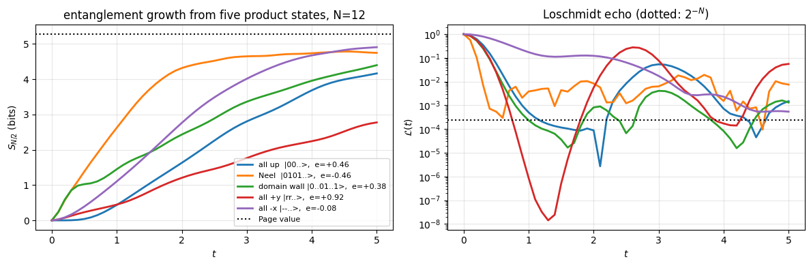
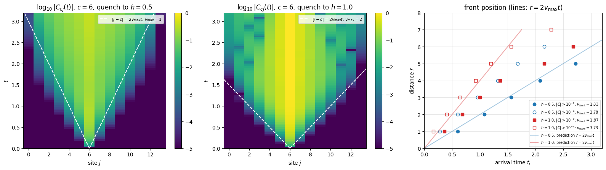
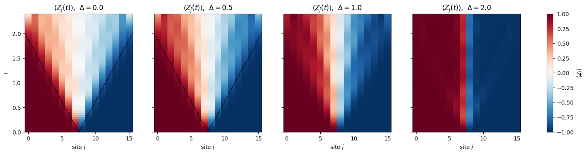
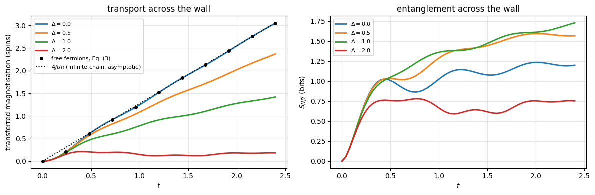
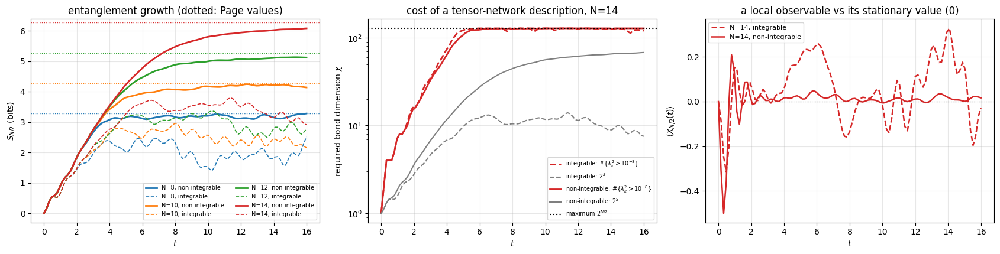
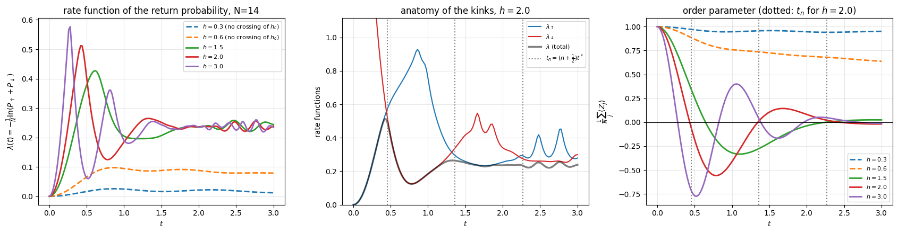
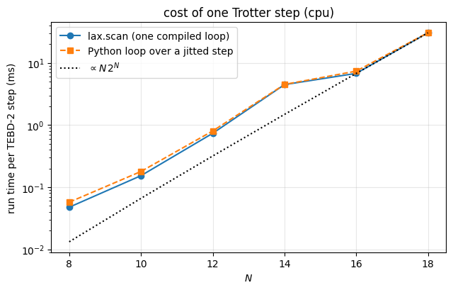

Quantum Many-Body Simulation — Chapter 5 — Ground states and unitary dynamics
1. Introduction and motivation
The question. Take a chain of interacting spins, prepare it in a simple state that you fully understand (all spins up, say), and at time \(t=0\)suddenly let it evolve under a Hamiltonian \(H\) of which this state is not an eigenstate. What happens next? This protocol is called a quantum quench, and it is the cleanest way to study the dynamics of an isolated quantum many-body system (reviews: Polkovnikov et al. 2011; Essler & Fagotti 2016):
How fast can information and correlations travel through the chain? (There is no relativity in the Schrödinger equation of a spin chain — and yet we will see a light cone.)
The evolution is unitary and the state stays pure forever, so in what sense can the system “relax”?
Why does the cost of every classical simulation of such dynamics eventually grow beyond reach?
Why people care. For decades these were questions for theorists only, because a solid-state magnet is never isolated: it exchanges energy with phonons long before anything interesting happens. This changed with quantum simulators:
ultracold atoms in optical lattices — a laser intensity or a magnetic field is switched in microseconds, the system stays isolated for seconds. Landmark experiments: the “quantum Newton’s cradle”, a nearly integrable gas that keeps the memory of its initial momentum distribution through thousands of collisions (Kinoshita et al. 2006), the direct observation of light-cone spreading of correlations (Cheneau et al. 2012), and the measurement of the entanglement entropy of a many-body state by interfering two copies of it (Islam et al. 2015);
trapped ions — chains of ions (7 to 11 in the experiments cited here) realise Ising and XY models with tunable range; a quench is a sudden switch-on of laser-mediated couplings (Richerme et al. 2014, Jurcevic et al. 2014, 2017);
Rydberg-atom arrays — tens of atoms in optical tweezers (51 in Bernien et al. 2017), initialised in a product state and released into Ising-type dynamics;
superconducting qubits — the same dynamics run as a Trotter circuit, gate by gate.
In all these platforms the experimental protocol is the numerical protocol of this notebook: prepare a product state → evolve with \(H\) → measure local observables and correlations. Simulations like ours are used to benchmark the devices at small sizes — and the devices are interesting precisely because simulations fail at large sizes. We will see why they fail: entanglement.
What we will compute. The integrators were derived in the previous notebooks; here we re-validate them and then use them as tools:
Section
Experiment
Physics
3–4
toolbox + validation against exact evolution, integrator cross-checks
how much Trotter error can we afford?
5
quench of an XXZ chain in a transverse field from \(\vert\!\uparrow\uparrow\dots\uparrow\rangle\)
relaxation of magnetisation and correlators, entanglement, delocalisation in Hilbert space
6
transverse-field Ising chain
Lieb–Robinson light cone of correlations
7
XXZ chain from a domain wall \(\vert\!\uparrow\uparrow\uparrow\downarrow\downarrow\downarrow\rangle\)
ballistic vs. slow vs. frozen spin transport, free-fermion check
8
tilted-field Ising chain, integrable vs. non-integrable
linear entanglement growth, Page saturation, relaxation of a local observable, cost of classical simulation
Units: \(\hbar = 1\), energies in units of the exchange coupling \(J\), times in units of \(1/J\).
Configuration
Every notebook of this course starts with the same cell. Choose where to run (DEVICE) and the floating-point precision (PRECISION): "double" = float64/complex128 (default, recommended for physics), "single" = float32/complex64 (half the memory, faster on consumer GPUs, but watch the round-off). All code below derives its dtypes from RDTYPE/CDTYPE and its check tolerances from TOL, so nothing else needs to change.
Code
# ==============================================================================# CONFIGURATION -- adapt to your hardware, then run the notebook top to bottom# ==============================================================================DEVICE ="auto"# "auto": use a GPU if JAX finds one, else CPU | "cpu" | "gpu"PRECISION ="double"# "double": float64/complex128 | "single": float32/complex64import osif DEVICE =="cpu": os.environ["JAX_PLATFORMS"] ="cpu"# must be set BEFORE jax is importedimport stringfrom functools import partialimport mathimport numpy as npimport jaximport jax.numpy as jnpfrom jax import lax# Precision is configurable: "double" = float64/complex128 (default; needed for long time evolutions and# tight validation), "single" = float32/complex64 (half the memory, faster on consumer GPUs).# In a notebook PRECISION is defined in the Configuration cell; for this module use the env var QE_PRECISION.PRECISION =globals().get("PRECISION", os.environ.get("QE_PRECISION", "double"))jax.config.update("jax_enable_x64", PRECISION =="double")RDTYPE = jnp.float64 if PRECISION =="double"else jnp.float32 # real dtypeCDTYPE = jnp.complex128 if PRECISION =="double"else jnp.complex64 # complex dtype of all states/operatorsTOL =1e-10if PRECISION =="double"else1e-4# tolerance for sanity checks (asserts)_LETTERS = string.ascii_letters # the 52 einsum index labels a-z, A-Zimport timeimport matplotlib.pyplot as pltif DEVICE =="gpu"and jax.default_backend() =="cpu":print("WARNING: DEVICE='gpu' requested but JAX found no GPU -- running on CPU.")print(f"JAX {jax.__version__} | backend: {jax.default_backend()} | devices: {jax.devices()}")print(f"precision: {PRECISION} -> real {RDTYPE.__name__}, complex {CDTYPE.__name__}, check tolerance TOL={TOL:g}")
JAX 0.11.0 | backend: cpu | devices: [CpuDevice(id=0)]
precision: double -> real float64, complex complex128, check tolerance TOL=1e-10
2. Theory: what happens after a quench
2.1 The protocol
Prepare \(|\psi_0\rangle\). In experiments this is a state that can be made with high fidelity: a product state (all spins polarised, a Néel pattern \(|\!\uparrow\downarrow\uparrow\downarrow\dots\rangle\), a domain wall), or the ground state of a simple pre-quench Hamiltonian \(H_0\).
At \(t=0\) change the Hamiltonian abruptly, \(H_0 \to H\). “Abruptly” means faster than any internal time scale \(1/J\), so the state has no time to follow.
Let the isolated system evolve, \(|\psi(t)\rangle = e^{-iHt}|\psi_0\rangle\), and measure.
2.2 Relaxation in a closed system: dephasing
Expand the initial state in the eigenbasis of the post-quench Hamiltonian, \(H|n\rangle = E_n|n\rangle\), \(c_n = \langle n|\psi_0\rangle\):
Nothing in Eq. (1) decays — every term oscillates forever. But a many-body state overlaps with exponentially many eigenstates, and the \(\sim 4^N\) frequencies \(E_m-E_n\) are incommensurate. After a short time the phases are effectively random, the second sum averages to (almost) zero, and the observable settles to the first sum, the diagonal ensemble. Relaxation of a closed quantum system is dephasing. In a small system the cancellation is imperfect (we will see fluctuations that shrink with \(N\)), and after a very long time the phases can re-align (revivals).
What is conserved: the energy \(E=\langle\psi_0|H|\psi_0\rangle\) — and in fact every \(|c_n|^2\). A quench from a product state injects an extensive amount of energy above the ground state (\(E - E_{\rm gs} \propto N\)): we are probing the middle of the many-body spectrum, far above the low-energy physics of notebook Hamiltonians and ground states.
Physics insight. By Eq. (1) the long-time value of an observable is fixed by the weights \(|c_n|^2\), i.e. by what the initial state and \(H\) have in common. How much of the initial state survives in these weights depends on \(H\). A generic (“non-integrable”) Hamiltonian conserves little besides the energy, and the local observables of initial states with the same energy relax to nearly the same stationary values. Integrable models — models with an extensive number of local conservation laws \(Q_\alpha\), such as free fermions or Bethe-ansatz solvable chains — keep much more memory: every \(\langle Q_\alpha\rangle\) is fixed by the initial state, and the stationary values of local observables depend on all of them (Essler & Fagotti 2016). We will meet both kinds.
2.3 The models
All Hamiltonians are nearest-neighbour open chains in the Pauli convention of the course (\(X_j, Y_j, Z_j\) are Pauli matrices on site \(j\); \(|\!\uparrow\rangle \equiv |0\rangle\) is the \(+1\) eigenstate of \(Z\)):
how fast the state becomes orthogonal to where it started
2.5 Three time scales of a finite open chain
Every statement we will test is a statement about the infinite chain, and every simulation runs on \(N\le16\) sites with open ends. Three time scales separate what the data mean, all of them set by the maximal group velocity \(v_{\max}\) of the excitations (§6.2):
Reflection. An excitation emitted at site \(j\) reaches the nearer chain end after \(t_{\rm edge}=d_{\rm end}/v_{\max}\) and bounces back (open ends are perfect mirrors: nothing leaves the chain). A correlation front, built from pairs, sweeps the chain twice as fast, so connected correlations feel the ends already at \(t_{\rm edge}/2\). Beyond that time the profiles are those of a finite box.
Saturation of the half-chain entropy at \(t_{\rm sat}\simeq (N/2)/v_{\max}=N/(2v_{\max})\) — the time a quasiparticle emitted at the far end of one half needs to reach the cut (§8.1). Before \(t_{\rm sat}\) all system sizes must lie on top of each other; after it the plateau is a finite-size number.
Revivals and recurrences. Reflected quasiparticles re-focus, so local observables show partial revivals on the scale \(t\sim N/v_{\max}\); they are strong in integrable chains, where the quasiparticles keep their identity, and weak in generic ones, where they scatter. A full Poincaré recurrence of the state needs a time exponentially long in \(N\) and is never reached here.
Read as a rule: the window in which a finite chain imitates an infinite one is \(t\lesssim t_{\rm edge}\) (\(t_{\rm edge}/2\) for correlations), and every plot in this notebook that extends beyond it does so deliberately — §8 wants the plateau, §9 wants many critical times. The concrete numbers (\(v_{\max}=2\min(J,h)\) for the Ising chains, \(4J\) for the \(XX\) chain) are collected with each experiment.
3. The toolbox
3.1 Engine recap
The next (folded) cell contains the simulator primitives used in this notebook, verbatim from the course engine: apply_gate (one einsum per local operator), heisenberg_terms (the Hamiltonian as a list of local terms), tebd_gates (one Trotter–Suzuki step as a gate list), the reference integrators chebyshev_evolve, krylov_evolve, and the dense dense_hamiltonian used only for validation at small \(N\).
Engine recap — the simulator primitives used in this notebook (click to expand)
# ==============================================================================# ENGINE RECAP: the functions of quantum_engine.py (SmoQ.jax) used in this notebook.# Each one is derived, with its mathematics and an independent check, in notebook 08b# (Chapter 3), 'Building the quantum simulator engine'.# States are rank-N tensors of shape (2,)*N; every operator acts through ONE einsum.# ==============================================================================# ----------------------------------------------------------------------------# 1. Elementary matrices: Paulis, Clifford generators, rotations# ----------------------------------------------------------------------------X = jnp.array([[0, 1], [1, 0]], dtype=CDTYPE)Y = jnp.array([[0, -1j], [1j, 0]], dtype=CDTYPE)Z = jnp.array([[1, 0], [0, -1]], dtype=CDTYPE)XX = jnp.kron(X, X)YY = jnp.kron(Y, Y)ZZ = jnp.kron(Z, Z)def rpp(theta, PP):"""Two-qubit Pauli rotation exp(-i theta PP/2) for any product PP of two Pauli matrices (XX, YY, ZZ, XY, ...). Because (P x Q)^2 = 1 the same closed form as for single-qubit rotations holds: exp(-i theta PP/2) = cos(theta/2) 1_4 - i sin(theta/2) PP. These are the native entangling gates of trapped ions (XX) and the building blocks of Trotterised spin-chain evolution. """return jnp.cos(theta /2) * jnp.eye(4, dtype=CDTYPE) -1j* jnp.sin(theta /2) * PPdef rxx(theta):"""exp(-i theta X(x)X / 2)."""return rpp(theta, XX)def ryy(theta):"""exp(-i theta Y(x)Y / 2)."""return rpp(theta, YY)def rzz(theta):"""exp(-i theta Z(x)Z / 2) -- diagonal: diag(e^{-i t/2}, e^{+i t/2}, e^{+i t/2}, e^{-i t/2})."""return rpp(theta, ZZ)# ----------------------------------------------------------------------------# 2. THE core primitive: a k-qubit operator acting on a tensor through ONE einsum# ----------------------------------------------------------------------------def apply_gate(psi, U, qubits):"""Apply a k-qubit operator U to the axes `qubits` of the tensor `psi`. MATH ---- One qubit (k=1), target q: psi'[s_0,..,a,..,s_{N-1}] = sum_b U[a,b] psi[s_0,..,b,..,s_{N-1}] Two qubits (k=2), targets (q1,q2); the 4x4 matrix is reshaped to U[a1,a2,b1,b2]: psi'[.., a1, .., a2, ..] = sum_{b1,b2} U[a1,a2,b1,b2] psi[.., b1, .., b2, ..] This IS the action of (1 x .. x U x .. x 1) -- written without ever building it. EINSUM TRANSLATION (generated automatically below) ------------------ N=3, q=1 : "db,abc->adc" d = new (output) index of qubit 1 N=4, q=(1,3) : "efbd,abcd->aecf" e,f = new indices of qubits 1 and 3 Recipe: label the axes of psi with letters a,b,c,...; give every target qubit a NEW letter (the next unused ones); U carries (new letters)+(old letters of the targets); the output is psi's labels with the target letters replaced by the new ones. IMPLEMENTATION NOTES -------------------- * reshape of U: (2^k,2^k) -> (2,)*2k. Row index = (a1..ak), column = (b1..bk), and the FIRST qubit in `qubits` is the most significant bit of the small matrix, i.e. it corresponds to the LEFT factor of kron(A,B). * `qubits` may be any distinct axes in any order: non-neighbouring gates cost the same. * U need not be unitary: projectors, Kraus operators and Hamiltonian terms reuse this. * psi may be ANY tensor with those axes of size 2: a state (rank N), a density tensor (rank 2N: ket axes 0..N-1, bra axes N..2N-1), ... COST O(2^k * 2^N) operations, O(2^N) memory (dense matrix: O(4^N) both). JAX `qubits` must be static Python ints (they define the einsum string); psi and U are traced, so the function can sit inside jit / grad / vmap / scan. """ qubits =tuple(int(q) for q in qubits) k, n =len(qubits), psi.ndim U = jnp.asarray(U, dtype=psi.dtype).reshape((2,) * (2* k)) # matrix -> rank-2k tensor inp =list(_LETTERS[:n]) # labels of psi's axes new = _LETTERS[n:n + k] # fresh labels for the outputs out = inp.copy()for a, q inzip(new, qubits): out[q] = a # target axes get the new labels sub =f"{''.join(new)}{''.join(inp[q] for q in qubits)},{''.join(inp)}->{''.join(out)}"return jnp.einsum(sub, U, psi)# ----------------------------------------------------------------------------# 3. State preparation# ----------------------------------------------------------------------------def zero_state(N):"""|00...0>: a rank-N tensor of zeros with a single 1 at index (0,0,...,0). JAX arrays are immutable: `.at[idx].set(v)` returns an updated COPY (functional style)."""return jnp.zeros((2,) * N, dtype=CDTYPE).at[(0,) * N].set(1.0)_KETS = {"0": [1, 0], "1": [0, 1], "+": [1, 1], "-": [1, -1], "r": [1, 1j], "l": [1, -1j]}def product_state(spec):"""Product state from a string, one character per qubit: product_state('01+-') = |0>|1>|+>|->. ('r','l' = the +1/-1 eigenstates of Y.) MATH psi[s_0,...,s_{N-1}] = v0[s_0] v1[s_1] ... v_{N-1}[s_{N-1}] EINSUM an outer product = einsum with NO summed index: "a,b,c->abc". A product state needs only 2N numbers; entanglement is what makes all 2^N necessary. """ vecs = [jnp.array(_KETS[c], dtype=CDTYPE) / jnp.linalg.norm(jnp.array(_KETS[c], dtype=CDTYPE))for c in spec] n =len(vecs) sub =",".join(_LETTERS[i] for i inrange(n)) +"->"+ _LETTERS[:n]return jnp.einsum(sub, *vecs)def basis_state(bits):"""Computational basis state |b_0 b_1 ... b_{N-1}> from a list of bits.""" bits =tuple(int(b) for b in bits)return jnp.zeros((2,) *len(bits), dtype=CDTYPE).at[bits].set(1.0)def haar_state(key, N):"""Haar-random pure state: a complex Gaussian vector, normalised. (The Gaussian measure is unitarily invariant, so the direction is uniformly distributed.) `key` is an explicit JAX PRNG key -- same key, same state: reproducible science.""" k1, k2 = jax.random.split(key) v = jax.random.normal(k1, (2,) * N) +1j* jax.random.normal(k2, (2,) * N)return (v / jnp.linalg.norm(v)).astype(CDTYPE)# ----------------------------------------------------------------------------# 4. Reduced density matrices & observables (matrix-free)# ----------------------------------------------------------------------------def rdm(psi, keep):"""Reduced density matrix of the qubits `keep` from a PURE state: rho_A = Tr_B |psi><psi|. MATH rho_A[a, a'] = sum_{b} psi[a, b] psi^*[a', b] (a: indices of A, b: of the rest B) EINSUM TRANSLATION N=3, keep=(0,): "abc,Abc->aA" with operands psi, psi^* * letters of B (b,c) appear in BOTH operands and not in the output -> summed = traced out * the kept axis gets a different letter in the second operand -> stays open (a and A) The full |psi><psi| (4^N numbers) is never formed; cost O(2^N 2^|A|). Returns a (2^|A|, 2^|A|) matrix with row/column order following `keep`. """ keep =tuple(int(q) for q in keep) n, k = psi.ndim, len(keep) a =list(_LETTERS[:n]) b = a.copy()for new, q inzip(_LETTERS[n:n + k], keep): b[q] = new sub =f"{''.join(a)},{''.join(b)}->{''.join(a[q] for q in keep)}{''.join(b[q] for q in keep)}"return jnp.einsum(sub, psi, jnp.conj(psi)).reshape(2** k, 2** k)def expect_local(psi, O, qubits):"""<psi| O_qubits |psi> for a k-local operator O (2^k x 2^k matrix). MATH <O> = Tr(rho_A O) with A = `qubits`: a local observable only sees the local state. Cost O(2^N) for the RDM + O(4^k) for the small trace. One RDM serves ALL observables on A (e.g. <X>,<Y>,<Z> from a single 2x2 matrix). """return jnp.real(jnp.trace(rdm(psi, qubits) @ jnp.asarray(O, dtype=CDTYPE)))def all_local_expectations(psi):"""Bloch vectors of all qubits: array (N,3) with rows (<X_q>, <Y_q>, <Z_q>), from the 1-qubit RDMs.""" out = []for q inrange(psi.ndim): r = rdm(psi, [q]) out.append(jnp.stack([jnp.real(jnp.trace(r @ P)) for P in (X, Y, Z)]))return jnp.stack(out)# ----------------------------------------------------------------------------# 5. State characteristics: entropies, fidelity, negativity# ----------------------------------------------------------------------------def schmidt_values(psi, subsystem):"""Schmidt coefficients of the bipartition A|B with A = `subsystem`. MATH Group the tensor axes into a matrix M[(a),(b)] = psi[a,b] of shape (2^|A|, 2^|B|). Its SVD M = U diag(lambda) V^dag IS the Schmidt decomposition |psi> = sum_k lambda_k |u_k>_A |v_k>_B , rho_A has eigenvalues lambda_k^2. IMPLEMENTATION transpose (A axes first) -> reshape -> svd. No density matrix needed. """ A =tuple(int(q) for q in subsystem) B =tuple(q for q inrange(psi.ndim) if q notin A) M = jnp.transpose(psi, A + B).reshape(2**len(A), -1)return jnp.linalg.svd(M, compute_uv=False)def fidelity_pure(psi, phi):"""F = |<psi|phi>|^2 between two pure states."""return jnp.abs(jnp.vdot(psi, phi)) **2# ----------------------------------------------------------------------------# 8. Hamiltonians as lists of local terms; H|psi> matrix-free# ----------------------------------------------------------------------------def heisenberg_terms(N, Jxx=1.0, Jyy=1.0, Jzz=1.0, hx=0.0, hy=0.0, hz=0.0, periodic=False, bonds=None):"""Spin-1/2 Hamiltonian in Pauli convention H = sum_<ij> (Jxx X_i X_j + Jyy Y_i Y_j + Jzz Z_i Z_j) + sum_i (hx X_i + hy Y_i + hz Z_i) returned as a LIST of local terms [(qubits, small_matrix), ...] -- this list *is* our Hamiltonian. Heisenberg: Jxx=Jyy=Jzz XXZ: Jxx=Jyy!=Jzz XY: Jzz=0 TFIM: only Jzz and hx. `bonds` overrides the default open chain (any graph: ladders, 2D lattices, all-to-all, ...)."""if bonds isNone: bonds = [(i, i +1) for i inrange(N -1)] + ([(N -1, 0)] if periodic and N >2else []) terms = [((i, j), Jxx * XX + Jyy * YY + Jzz * ZZ) for (i, j) in bonds]if hx !=0or hy !=0or hz !=0: terms += [((i,), hx * X + hy * Y + hz * Z) for i inrange(N)]return termsdef apply_hamiltonian(terms, psi):"""H|psi> = sum_k h_k|psi>, every term applied with `apply_gate` (h_k is Hermitian, not unitary -- the einsum does not care). Cost O(#terms * 2^N). This matrix-vector product is ALL that Lanczos, Chebyshev and Krylov methods need, which is why they scale to N ~ 25-30.""" out = jnp.zeros_like(psi)for qubits, h in terms: out = out + apply_gate(psi, h, qubits)return outdef energy(terms, psi):"""<psi|H|psi> = Re <psi | (H psi)>."""return jnp.real(jnp.vdot(psi, apply_hamiltonian(terms, psi)))def dense_hamiltonian(terms, N):"""Dense 2^N x 2^N matrix for VALIDATION on small N -- built from the matrix-free action: column j of H is H|e_j>. `jax.vmap` applies H to all basis vectors at once.""" eye = jnp.eye(2** N, dtype=CDTYPE).reshape((2** N,) + (2,) * N) cols = jax.vmap(lambda e: apply_hamiltonian(terms, e).reshape(-1))(eye)return cols.T# ----------------------------------------------------------------------------# 9. Time evolution: TEBD / Trotter-Suzuki, Chebyshev, Krylov, exact# ----------------------------------------------------------------------------def _expm_herm(h, tau):"""exp(-i tau h) for a SMALL Hermitian matrix: h = V w V^dag => V exp(-i tau w) V^dag.""" w, v = jnp.linalg.eigh(jnp.asarray(h, dtype=CDTYPE))return (v * jnp.exp(-1j* tau * w)) @ v.conj().Tdef tebd_gates(terms, dt, order=2):"""Gate sequence of ONE Trotter-Suzuki (TEBD) step for H = sum_k h_k. MATH exp(-i H dt) cannot be split exactly because [h_k, h_l] != 0, but (BCH formula): order 1: prod_k e^{-i h_k dt} local error O(dt^2), global O(dt) order 2: prod_k e^{-i h_k dt/2} * prod_k(reversed) e^{-i h_k dt/2} local O(dt^3), global O(dt^2) order 4: S2(s dt)^2 S2((1-4s) dt) S2(s dt)^2, s = 1/(4 - 4^{1/3}) (Suzuki) global O(dt^4) Each factor is a 2x2 or 4x4 unitary -> applied by einsum; this is TEBD on a full state vector. Every order is exactly unitary: the norm is conserved to machine precision; the ERROR is in the phase /direction of the state, and it is controlled by dt. """if order ==1:return [(q, _expm_herm(h, dt)) for q, h in terms]if order ==2: half = [(q, _expm_herm(h, dt /2)) for q, h in terms]return half + half[::-1]if order ==4: s =1.0/ (4.0-4.0** (1.0/3.0)) seq = []for w in (s, s, 1-4* s, s, s): seq += tebd_gates(terms, w * dt, order=2)return seqraiseValueError("order must be 1, 2 or 4")def apply_gates(psi, gates):"""Apply a list [(qubits, U), ...] in order -- a quantum circuit is a Python loop over einsums. Under `jax.jit` the loop is unrolled at trace time and XLA fuses it into one program."""for qubits, U in gates: psi = apply_gate(psi, U, qubits)return psidef lanczos(matvec, v0, m=60, reorth=True):"""m-step Lanczos iteration: orthonormal basis V of the Krylov space span{v, Hv, H^2 v, ...} in which H is TRIDIAGONAL: T = V^dag H V = tridiag(beta, alpha, beta). Recurrence w = H v_j - alpha_j v_j - beta_{j-1} v_{j-1}, alpha_j = <v_j|H|v_j>, beta_j = ||w||. `reorth=True` re-orthogonalises against all previous vectors (cures the loss of orthogonality of floating-point Lanczos at the price of O(m^2) inner products). Only `matvec` (H|psi>) is needed -> matrix-free. Returns (alphas, betas, V[m, 2,..,2]). """ v = v0 / jnp.linalg.norm(v0) V, alphas, betas = [v], [], [] w = matvec(v)for j inrange(m): a = jnp.real(jnp.vdot(V[j], w)) alphas.append(a) w = w - a * V[j] - (betas[-1] * V[j -1] if j >0else0.0)if reorth:for u in V: w = w - jnp.vdot(u, w) * u b = jnp.linalg.norm(w)if j == m -1orfloat(b) <1e-12:break betas.append(b) V.append(w / b) w = matvec(V[-1])return np.array(alphas, dtype=float), np.array(betas, dtype=float), jnp.stack(V)def spectral_bounds(terms, N, m=40, key=None):"""Cheap estimate of (E_min, E_max) from a short Lanczos run -- needed to rescale H into [-1,1] for the Chebyshev expansion.""" key = jax.random.PRNGKey(1) if key isNoneelse key a, b, _ = lanczos(jax.jit(lambda p: apply_hamiltonian(terms, p)), haar_state(key, N), m) w = np.linalg.eigvalsh(np.diag(a) + np.diag(b, 1) + np.diag(b, -1))returnfloat(w[0]), float(w[-1])def chebyshev_evolve(psi, terms, t, bounds, tol=1e-13, safety=1.02):"""exp(-iHt)|psi> by Chebyshev expansion (Tal-Ezer & Kosloff) -- no Trotter error. MATH rescale Ht = (H - b)/a with a = (Emax-Emin)/2, b = (Emax+Emin)/2 => spectrum in [-1,1] Jacobi-Anger: e^{-i a t x} = sum_k (2 - delta_k0) (-i)^k J_k(a t) T_k(x) => e^{-iHt}|psi> = e^{-i b t} sum_k c_k |phi_k>, c_k = (2-delta_k0)(-i)^k J_k(a t) recurrence |phi_0> = |psi>, |phi_1> = Ht|psi>, |phi_{k+1}> = 2 Ht|phi_k> - |phi_{k-1}>. CONVERGENCE J_k(at) decays super-exponentially for k > a t: the number of terms is ~ a t + O(10), and the error can be pushed to machine precision. Memory: 3 vectors. JAX the recurrence is a `lax.scan` whose carry is (phi_{k-1}, phi_k, accumulated sum). """from scipy.special import jv Emin, Emax = bounds a, b = safety * (Emax - Emin) /2.0, (Emax + Emin) /2.0 K =int(np.ceil(a *abs(t))) +20whileabs(jv(K, a * t)) > tol: K +=10 coef = jnp.asarray([(1if k ==0else2) * ((-1j) ** k) * jv(k, a * t) for k inrange(K +1)], dtype=CDTYPE)def Ht(p):return (apply_hamiltonian(terms, p) - b * p) / a T0, T1 = psi, Ht(psi) acc0 = coef[0] * T0 + coef[1] * T1def body(carry, c): Tm, Tc, acc = carry Tn =2* Ht(Tc) - Tmreturn (Tc, Tn, acc + c * Tn), None (_, _, acc), _ = lax.scan(body, (T0, T1, acc0), coef[2:])return jnp.exp(-1j* b * t) * accdef krylov_evolve(psi, terms, t, m=30):"""exp(-iHt)|psi> in an m-dimensional Krylov space: |psi(t)> ~ ||psi|| * V exp(-i T t) e_1 , T = V^dag H V (tridiagonal, from Lanczos). Exact for polynomials of degree < m in H; accurate as long as |t| * (spectral width) <~ m. For long times: chain several short Krylov steps.""" nrm = jnp.linalg.norm(psi) a, b, V = lanczos(jax.jit(lambda p: apply_hamiltonian(terms, p)), psi, m) w, S_ = np.linalg.eigh(np.diag(a) + np.diag(b, 1) + np.diag(b, -1)) c = S_ @ (np.exp(-1j* t * w) * S_[0, :])return nrm * jnp.tensordot(jnp.asarray(c, dtype=CDTYPE), V, axes=1)
3.2 Evolve — observe — evolve — observe: a scan inside a scan
A quench simulation is a loop over time steps. Two facts shape its implementation:
the Trotter step \(\delta t\) must be small for accuracy (we will use \(\delta t = 0.02\)), but observables are smooth on that scale — it is enough to measure every \(n_{\rm sub}\)-th step. This matters, because some measurements (an SVD for the entanglement entropy) cost more than a step;
a Python for loop under jax.jit would be unrolled: 250 steps \(\times\) 50 gates \(=12\,500\) einsums in one giant program that takes forever to compile.
lax.scan(f, carry, xs, length) is JAX’s compiled loop: f(carry, x) -> (new_carry, output) is traced once, the loop runs inside XLA, and the outputs are stacked along a new leading (time) axis. We nest two scans:
observe may return any pytree — we use a dict of arrays — and scan stacks each leaf separately: a dict entry of shape (N, 3) comes back as (n_meas, N, 3). (See JAX from scratch for scan and pytrees.)
Code
# ==============================================================================# STEP 1: the time loop -- evolve with a fixed gate list, observe every n_sub steps# ==============================================================================def evolve_and_observe(psi0, gates, n_meas, n_sub, observe):"""Evolve `psi0` for n_meas*n_sub Trotter steps and record `observe(psi)` at t = 0 and after every n_sub steps. MATH psi(t_k) = [U(dt)]^{k n_sub} psi0, t_k = k n_sub dt, k = 0..n_meas, with U(dt) the product of the local gates in `gates` (one Trotter-Suzuki step). IMPLEMENTATION inner scan = n_sub steps (no output), outer scan = measurements. The t=0 measurement is prepended with `tree_map`, which applies a function to every leaf of the observable pytree (here: concatenate along the time axis). COST n_meas*n_sub * len(gates) einsums of O(2^N) each + n_meas calls of `observe`. JAX fully traceable: wrap the caller in jax.jit; vmap over psi0 or over Hamiltonian parameters hidden in `gates` works out of the box. Returns (psi_final, obs) where every leaf of obs has leading dimension n_meas+1. """def one_step(psi, _):return apply_gates(psi, gates), Nonedef one_block(psi, _): psi, _ = lax.scan(one_step, psi, None, length=n_sub)return psi, observe(psi) psi_final, obs = lax.scan(one_block, psi0, None, length=n_meas) obs0 = observe(psi0) obs = jax.tree_util.tree_map(lambda first, rest: jnp.concatenate([first[None], rest]), obs0, obs)return psi_final, obs
3.3 Observables that cost (almost) nothing
Local Bloch vectors and bond correlators.\(\langle O\rangle = {\rm Tr}(\rho_A O)\) with the reduced density matrix of the one or two sites involved (engine functions rdm, all_local_expectations). One \(4\times4\) matrix \(\rho_{j,j+1}\) delivers \(\langle XX\rangle,\langle YY\rangle,\langle ZZ\rangle\) at once.
Everything diagonal from the probabilities.\(Z\)-type observables only need \(p(s) = |\psi(s)|^2\), which is a real rank-\(N\) tensor:
With the sign vector \(z=(+1,-1)\) these are einsums in which every index is summed: for \(N=4\), \(q=1\): "abcd,b->", and for the pair \((c,j)=(1,3)\): "abcd,b,d->".
Everything about the half-chain cut from one SVD. Reshape the state tensor into a \(2^{N/2}\times2^{N/2}\) matrix (left half = row index); its singular values \(\lambda_k\) are the Schmidt coefficients, \(|\psi\rangle=\sum_k\lambda_k|u_k\rangle_A|v_k\rangle_B\) (derived in States, observables, entanglement). Then
entanglement entropy \(S_A=-\sum_k\lambda_k^2\log_2\lambda_k^2\) (in bits);
negativity. For a mixed state, the negativity is \(\mathcal N=\sum(\text{absolute values of the negative eigenvalues of }\rho^{T_A})\), where \(T_A\) is the partial transpose on \(A\) (Vidal & Werner 2002). For a pure state in Schmidt form, \(\rho=\sum_{kl}\lambda_k\lambda_l\,|u_k\rangle\langle u_l|\otimes|v_k\rangle\langle v_l|\), and transposing only the \(A\) factor (\((|u_k\rangle\langle u_l|)^{T}=|u_l^{*}\rangle\langle u_k^{*}|\), where \(|u^*\rangle\) has the complex-conjugated components) gives \(\rho^{T_A}=\sum_{kl}\lambda_k\lambda_l\,|u_l^{*}\rangle\langle u_k^{*}|\otimes|v_k\rangle\langle v_l|\). Acting with it on \(|u_m^{*}\rangle|v_n\rangle\) leaves only the terms \(k=m\), \(l=n\) and returns \(\lambda_m\lambda_n|u_n^{*}\rangle|v_m\rangle\): the pair \((m,n)\) is swapped. Hence the eigenvectors are \(|u_k^*v_k\rangle\) with eigenvalue \(\lambda_k^2\), and \((|u_k^*v_l\rangle\pm|u_l^*v_k\rangle)/\sqrt2\) with eigenvalues \(\pm\lambda_k\lambda_l\) for \(k<l\). The negative ones sum to
No \(4^N\)-sized density matrix is needed. (\(E_{\mathcal N}\) of a pure state is its Rényi-\(\tfrac12\) entropy; the Rényi-\(\alpha\) entropy \(S_\alpha=\frac{1}{1-\alpha}\log_2\sum_k\lambda_k^{2\alpha}\) gives \(S_A\) for \(\alpha\to1\) and the Rényi-2 entropy of notebook 06 for \(\alpha=2\), and it decreases with \(\alpha\) (Exercise 8), hence \(E_{\mathcal N}\ge S_A\).)
We return the Schmidt values themselves from the time loop and post-process them; this also gives us the entanglement spectrum for §8.
Code
# ==============================================================================# STEP 2: observables (all matrix-free, all jit/vmap/scan compatible)# ==============================================================================Z_SIGNS = jnp.array([1.0, -1.0], dtype=RDTYPE) # eigenvalues of Z for s = 0 (up), 1 (down)def z_profile(psi):"""Magnetisation profile <Z_q>, q = 0..N-1, from the probabilities p = |psi|^2. MATH <Z_q> = sum_s p(s) (-1)^{s_q} EINSUM N=4, q=1: "abcd,b->" (operands p, z) -- no index survives: a full contraction to a scalar. COST O(2^N) per site. """ N = psi.ndim p = jnp.abs(psi) **2 letters = _LETTERS[:N]return jnp.stack([jnp.einsum(f"{letters},{letters[q]}->", p, Z_SIGNS) for q inrange(N)])def zz_connected_row(psi, c):"""Connected correlations C_{cj} = <Z_c Z_j> - <Z_c><Z_j> of site c with all sites j (C_cc = 1 - <Z_c>^2). EINSUM N=4, (c,j)=(1,3): "abcd,b,d->" with operands p, z, z. """ N = psi.ndim p = jnp.abs(psi) **2 letters = _LETTERS[:N] m = z_profile(psi) zz = [jnp.einsum(f"{letters},{letters[c]},{letters[j]}->", p, Z_SIGNS, Z_SIGNS) if j != celse jnp.asarray(1.0, dtype=RDTYPE) for j inrange(N)]return jnp.stack(zz) - m[c] * mdef bond_correlators(psi):"""Nearest-neighbour correlators: array (N-1, 3) with rows (<X_j X_j+1>, <Y_j Y_j+1>, <Z_j Z_j+1>). One 4x4 reduced density matrix per bond serves all three: <PP> = Tr(rho_{j,j+1} P(x)P).""" N = psi.ndim rows = []for j inrange(N -1): r = rdm(psi, (j, j +1)) rows.append(jnp.stack([jnp.real(jnp.trace(r @ PP)) for PP in (XX, YY, ZZ)]))return jnp.stack(rows)def half_chain_schmidt(psi):"""Schmidt values lambda_k of the cut between sites N/2-1 and N/2 (one SVD of a 2^{N/2} x 2^{N/2} matrix)."""return schmidt_values(psi, tuple(range(psi.ndim //2)))def entropy_from_schmidt(lam):"""S = -sum_k p_k log2 p_k, p_k = lambda_k^2 (bits). Clipping implements 0*log 0 = 0.""" p = jnp.clip(lam **2, 1e-30, None)return-jnp.sum(p * jnp.log2(p), axis=-1)def negativity_from_schmidt(lam):"""Pure-state negativity N = ((sum_k lambda_k)^2 - 1)/2 (see the derivation above)."""return (jnp.sum(lam, axis=-1) **2-1.0) /2.0def observe_everything(psi, psi0):"""The full measurement record of one snapshot, as a dict (a pytree -> scan stacks every entry)."""returndict(bloch=all_local_expectations(psi), # (N, 3) <X_j>, <Y_j>, <Z_j> bonds=bond_correlators(psi), # (N-1, 3) <XX>, <YY>, <ZZ> on every bond schmidt=half_chain_schmidt(psi), # (2^{N/2},) ipr=jnp.sum(jnp.abs(psi) **4), # inverse participation ratio norm=jnp.linalg.norm(psi), # must stay 1: every Trotter gate is unitary echo=jnp.abs(jnp.vdot(psi0, psi)) **2) # Loschmidt echo |<psi0|psi(t)>|^2
A two-line sanity check of the entanglement formulas on a state we know by heart: the Bell pair \((|00\rangle+|11\rangle)/\sqrt2\) has \(\lambda=(1,1)/\sqrt2\), hence \(S=1\) bit, \(\mathcal N=\tfrac12\), \(E_{\mathcal N}=1\); a product state has \(S=\mathcal N=0\). We also test the diagonal-observable einsums against the generic RDM route.
Code
# ==============================================================================# CHECKPOINT 0: observables on states with known answers# ==============================================================================bell = (basis_state([0, 0]) + basis_state([1, 1])) / jnp.sqrt(2.0)lam = half_chain_schmidt(bell)print(f"Bell pair : S = {float(entropy_from_schmidt(lam)):.6f} bit, negativity = {float(negativity_from_schmidt(lam)):.6f}")assertabs(float(entropy_from_schmidt(lam)) -1.0) < TOL andabs(float(negativity_from_schmidt(lam)) -0.5) < TOLlam = half_chain_schmidt(product_state("0+1-"))print(f"product : S = {float(entropy_from_schmidt(lam)):.2e} bit, negativity = {float(negativity_from_schmidt(lam)):.2e}")assertabs(float(entropy_from_schmidt(lam))) < TOL andabs(float(negativity_from_schmidt(lam))) <10* TOL# diagonal einsums vs reduced density matrices on a random 6-spin statekey = jax.random.PRNGKey(2024)k1, k2 = jax.random.split(key)phi = jax.random.normal(k1, (2,) *6) +1j* jax.random.normal(k2, (2,) *6)phi = (phi / jnp.linalg.norm(phi)).astype(CDTYPE)err_z =float(jnp.max(jnp.abs(z_profile(phi) - all_local_expectations(phi)[:, 2])))ref = jnp.stack([expect_local(phi, ZZ, (2, j)) - expect_local(phi, Z, (2,)) * expect_local(phi, Z, (j,))for j inrange(6) if j !=2])got = jnp.stack([zz_connected_row(phi, 2)[j] for j inrange(6) if j !=2])err_zz =float(jnp.max(jnp.abs(ref - got)))print(f"random state: max |<Z_q> einsum - RDM| = {err_z:.1e}, max |C_2j einsum - RDM| = {err_zz:.1e}")assert err_z < TOL and err_zz < TOL
Bell pair : S = 1.000000 bit, negativity = 0.500000
product : S = 6.41e-16 bit, negativity = -1.11e-16
random state: max |<Z_q> einsum - RDM| = 2.8e-16, max |C_2j einsum - RDM| = 1.1e-16
All four numbers agree with the analytic values and the two independent routes to \(\langle Z\rangle\), \(C_{ij}\) coincide to round-off. The toolbox is ready.
3.4 An exact reference trajectory (small \(N\) only)
For validation we want \(|\psi(t_k)\rangle\) at all measurement times from dense linear algebra. Diagonalise once, \(H=V\,{\rm diag}(E)\,V^\dagger\), then
Cost \(O(8^N)\) for the diagonalisation and \(O(4^N)\) memory — this is the wall the matrix-free methods avoid; we use it up to \(N=10\) (\(1024\times1024\)). The observables of all snapshots then follow from a single jax.vmap of the sameobserve function over the time axis.
Code
# ==============================================================================# STEP 3: dense reference -- VALIDATION ONLY (builds the 2^N x 2^N matrix)# ==============================================================================def exact_trajectory(psi0, terms, times):"""States psi(t) for all t in `times` by full diagonalisation. Returns an array (len(times), 2,..,2). MATH psi(t) = V exp(-i E t) V^dag psi0 COST O(8^N) time, O(4^N) memory -> small N only. """ N = psi0.ndim E, V = jnp.linalg.eigh(dense_hamiltonian(terms, N)) c = V.conj().T @ psi0.reshape(-1) # amplitudes c_n = <n|psi0> phases = jnp.exp(-1j* jnp.asarray(times, dtype=RDTYPE)[:, None] * E[None, :]) # (T, 2^N) flat = jnp.einsum("in,tn->ti", V, phases * c[None, :])return flat.reshape((len(times),) + (2,) * N)
4. Checkpoint: the affordable Trotter error
Model and protocol (row 1 of the table in §2.3): \(J_{xx}=J_{yy}=1\), \(J_{zz}=0.5\), \(h_x=1\), initial state \(|\!\uparrow\uparrow\dots\uparrow\rangle=|00\dots0\rangle\), evolution to \(T=5\) with \(\delta t=0.02\) (250 steps), a snapshot every 5 steps.
We run TEBD of order 1, 2 and 4 at \(N=10\) and compare with the exact trajectory through
the infidelity\(1-F(t)\), \(F=|\langle\psi_{\rm exact}(t)|\psi_{\rm TEBD}(t)\rangle|^2\) — the strictest test, sensitive to every amplitude and phase;
the root-mean-square deviation of all \(6N-3\) local observables — what actually matters for the physics plots.
Recall from TEBD / Trotter–Suzuki: a \(p\)-th order step has a state error that accumulates as \(\epsilon(t)\sim C\,t\,\delta t^{\,p}\), so the infidelity behaves as \(1-F\sim\epsilon^2\propto t^2\,\delta t^{\,2p}\).
Physics insight. On one bond the three terms \(X\!X\), \(Y\!Y\), \(Z\!Z\)commute (each pair of them anticommutes on site \(j\)and on site \(j+1\), two minus signs cancel). Hence \(e^{-i(J_{xx}XX+J_{yy}YY+J_{zz}ZZ)\delta t}=R_{xx}(2J_{xx}\delta t)\,R_{yy}(2J_{yy}\delta t)\,R_{zz}(2J_{zz}\delta t)\)exactly: our single \(4\times4\) bond gate is what a trapped-ion or superconducting device would run as three native two-qubit rotations — \(3(N-1)+N=4N-3\) hardware gates per first-order step. The Trotter error comes only from neighbouring bonds and from the field, which do not commute. The next cell verifies the identity.
Code
# ==============================================================================# PARAMETERS of the reference quench (change them and re-run the notebook)# ==============================================================================JXX, JYY, JZZ, HX =1.0, 1.0, 0.5, 1.0# XXZ couplings + transverse fieldT_MAX, DT, N_SUB =5.0, 0.02, 5# final time, Trotter step, steps per snapshotN_MEAS =int(round(T_MAX / (DT * N_SUB))) # number of snapshots after t=0times = np.arange(N_MEAS +1) * DT * N_SUBN_CHECK =10# validation size (dense 1024 x 1024)# the bond gate as three commuting native rotations (rpp(theta) = exp(-i theta PP / 2))bond_gate = tebd_gates(heisenberg_terms(2, JXX, JYY, JZZ), DT, order=1)[0][1]native = rxx(2* JXX * DT) @ ryy(2* JYY * DT) @ rzz(2* JZZ * DT)err =float(jnp.max(jnp.abs(bond_gate - native)))print(f"|exp(-i h_bond dt) - Rxx Ryy Rzz| = {err:.1e}")assert err < TOL
|exp(-i h_bond dt) - Rxx Ryy Rzz| = 1.1e-16
Code
# ==============================================================================# CHECKPOINT 1: TEBD orders 1, 2, 4 against the exact trajectory (N = 10)# ==============================================================================terms = heisenberg_terms(N_CHECK, JXX, JYY, JZZ, hx=HX)psi0 = zero_state(N_CHECK)t0 = time.time()traj_exact = exact_trajectory(psi0, terms, times)traj_exact.block_until_ready()t_exact = time.time() - t0observe_all_times = jax.jit(jax.vmap(lambda psi: observe_everything(psi, psi0))) # vmap over the time axisobs_exact = observe_all_times(traj_exact)def flat_observables(obs):"""All local observables of all snapshots as one array (T, 6N-3): used for the RMS deviation.""" T = obs["bloch"].shape[0]return jnp.concatenate([obs["bloch"].reshape(T, -1), obs["bonds"].reshape(T, -1)], axis=1)check = {}for order in (1, 2, 4): gates = tebd_gates(terms, DT, order) run = jax.jit(lambda p, gates=gates: evolve_and_observe(p, gates, N_MEAS, N_SUB, lambda s: s)) # record the states t0 = time.time() _, traj = run(psi0) traj.block_until_ready() wall = time.time() - t0 infid =1.0- jax.vmap(fidelity_pure)(traj_exact, traj) obs = observe_all_times(traj) rmse = jnp.sqrt(jnp.mean((flat_observables(obs) - flat_observables(obs_exact)) **2, axis=1)) check[order] =dict(infid=np.asarray(infid), rmse=np.asarray(rmse), obs=obs, gates=len(gates), wall=wall)print(f"TEBD order {order}: {len(gates):4d} gates/step | 1-F(T) = {float(infid[-1]):.2e} | "f"max_t RMSE(observables) = {float(rmse.max()):.2e} | compile+run {wall:.1f} s")print(f"exact diagonalisation + trajectory: {t_exact:.1f} s")assert check[4]["infid"][-1] < check[2]["infid"][-1] < check[1]["infid"][-1]assert check[2]["rmse"].max() <1e-2
TEBD order 1: 19 gates/step | 1-F(T) = 1.35e-02 | max_t RMSE(observables) = 6.60e-03 | compile+run 0.2 s
TEBD order 2: 38 gates/step | 1-F(T) = 1.90e-06 | max_t RMSE(observables) = 1.31e-04 | compile+run 0.2 s
TEBD order 4: 190 gates/step | 1-F(T) = 7.14e-12 | max_t RMSE(observables) = 4.42e-09 | compile+run 0.5 s
exact diagonalisation + trajectory: 1.7 s
Reading the result. (Numbers refer to the printed table.)
The infidelity rises steeply at first and then much more slowly. The textbook estimate — per-step errors adding up coherently, \(\epsilon(t)\sim C\,t\,\delta t^{\,p}\), hence \(1-F\propto t^2\) (dotted guide) — is followed by the second-order curve from \(t\approx1.5\) on, but for orders 1 and 4 it is a (safe) upper bound: once the state is spread over many eigenstates the errors of successive steps partly cancel. Never assume the nominal law; measure it.
At the same \(\delta t\) the first-order scheme — the one a simple hardware circuit implements — loses a visible fraction of the fidelity by \(T=5\) (\(1-F\approx10^{-2}\)), while order 2 costs only twice the gates and is four orders of magnitude better; order 4 is essentially exact (\(10^{-11}\)) but costs \(10\times\) the gates of order 1.
Local observables are far more forgiving than the fidelity: on the right panel even the order-1 magnetisation is hard to tell from the exact curve by eye, and order 2 is indistinguishable — compare \(1-F=1.4\times10^{-2}\) with an RMS observable error of \(6.6\times10^{-3}\) for order 1. The fidelity compares \(2^N\) amplitudes and decays with system size for any fixed local error; a local observable only feels the local error.
Numerical practice. Choose \(\delta t\) by the error of the quantity you plot, measured against a reference at small \(N\), and remember that Trotter errors of local observables depend only weakly on \(N\). From here on we use order 2 with \(\delta t=0.02\).
4.1 Cross-checking the other integrators
The exact reference stops at \(N\approx12\). For larger chains we need another independent high-accuracy method to validate TEBD against: Chebyshev propagation (polynomial expansion of \(e^{-iHt}\), error down to round-off) and Krylov propagation (exponentiation in a small Lanczos subspace; we chain 25 steps of \(\Delta t=0.2\) with subspace dimension 30). First they have to pass the exact test themselves.
Code
# ==============================================================================# CHECKPOINT 2: Chebyshev and Krylov against the exact state at t = T (N = 10)# ==============================================================================bounds = spectral_bounds(terms, N_CHECK)psi_cheb = chebyshev_evolve(psi0, terms, T_MAX, bounds)psi_kry = psi0for _ inrange(25): # 25 short Krylov steps: t * (spectral width) must stay <~ m psi_kry = krylov_evolve(psi_kry, terms, T_MAX /25, m=30)inf_cheb =1.0-float(fidelity_pure(traj_exact[-1], psi_cheb))inf_kry =1.0-float(fidelity_pure(traj_exact[-1], psi_kry))print(f"spectral bounds (Lanczos estimate): [{bounds[0]:.3f}, {bounds[1]:.3f}]")print(f"Chebyshev : 1-F = {inf_cheb:.1e}")print(f"Krylov : 1-F = {inf_kry:.1e}")print(f"TEBD-4 : 1-F = {check[4]['infid'][-1]:.1e} TEBD-2: {check[2]['infid'][-1]:.1e} TEBD-1: {check[1]['infid'][-1]:.1e}")assertabs(inf_cheb) <1e3* TOL andabs(inf_kry) <1e3* TOL
Chebyshev and Krylov reproduce the exact state to (nearly) machine precision, so either can serve as the reference where dense algebra is impossible. All five ways of computing \(e^{-iHt}|\psi_0\rangle\) — dense diagonalisation, three Trotter orders, Chebyshev, Krylov — agree within their known error budgets.
5. Experiment 1 — relaxation after a quench of the XXZ chain in a transverse field
Same model and protocol, now at \(N=14\) (\(16\,384\) amplitudes; the dense Hamiltonian would already need 4.3 GB of memory and of order \(10^{13}\) floating-point operations to diagonalise, while TEBD needs a few seconds). We record the complete measurement set of §2.4. Since the exact reference is gone, the run is validated at the final time against Chebyshev propagation, and continuously by two conservation laws: the norm (exactly conserved by every unitary gate) and the energy (conserved by the exact dynamics, but only approximately by a Trotter circuit — a built-in error monitor).
Code
# ==============================================================================# EXPERIMENT 1: PARAMETERS# ==============================================================================N1 =14# chain length (try 16: ~5x slower)terms1 = heisenberg_terms(N1, JXX, JYY, JZZ, hx=HX)gates1 = tebd_gates(terms1, DT, order=2)bytes_per_amp = np.dtype(CDTYPE).itemsize # 16 bytes per amplitude in double precision, 8 in singleprint(f"N = {N1}: state vector {2**N1} amplitudes = {2**N1 * bytes_per_amp /1e6:.2f} MB ({CDTYPE.__name__}), "f"{len(gates1)} gates per 2nd-order step, {N_MEAS * N_SUB} steps")run1 = jax.jit(lambda p: evolve_and_observe(p, gates1, N_MEAS, N_SUB, lambda s: observe_everything(s, p)))psi0_1 = zero_state(N1)t0 = time.time()psiT_1, obs1 = run1(psi0_1)jax.block_until_ready(obs1)t_first = time.time() - t0t0 = time.time()psiT_1, obs1 = run1(psi0_1)jax.block_until_ready(obs1)t_second = time.time() - t0print(f"first call (compile + run): {t_first:.1f} s | second call (run only): {t_second:.1f} s")# ---- validation at the final time: TEBD vs Chebyshev (independent method, no Trotter error)psi_ref = chebyshev_evolve(psi0_1, terms1, T_MAX, spectral_bounds(terms1, N1))infid1 =1.0-float(fidelity_pure(psi_ref, psiT_1))dev1 =float(jnp.max(jnp.abs(all_local_expectations(psi_ref) - obs1["bloch"][-1])))print(f"TEBD-2 vs Chebyshev at T={T_MAX}: 1-F = {infid1:.2e}, max deviation of local <X>,<Y>,<Z> = {dev1:.2e}")assert infid1 <1e-2and dev1 <1e-2# ---- energy from the recorded observables: E = sum_bonds (Jxx<XX>+Jyy<YY>+Jzz<ZZ>) + hx sum_j <X_j>E_t = (np.asarray(obs1["bonds"]) @ np.array([JXX, JYY, JZZ])).sum(1) + HX * np.asarray(obs1["bloch"][:, :, 0]).sum(1)E0 =float(energy(terms1, psi0_1))print(f"E(0) = {E_t[0]:.6f} (matrix-free <H>: {E0:.6f}); max_t |E(t)-E(0)| = {np.abs(E_t - E_t[0]).max():.2e}; "f"max_t | ||psi||-1 | = {np.abs(np.asarray(obs1['norm']) -1).max():.1e}")assertabs(E_t[0] - E0) <1e3* TOL and np.abs(np.asarray(obs1["norm"]) -1).max() <1e3* TOL
N = 14: state vector 16384 amplitudes = 0.26 MB (complex128), 54 gates per 2nd-order step, 250 steps
first call (compile + run): 1.8 s | second call (run only): 1.1 s
TEBD-2 vs Chebyshev at T=5.0: 1-F = 2.95e-06, max deviation of local <X>,<Y>,<Z> = 1.74e-04
E(0) = 6.500000 (matrix-free <H>: 6.500000); max_t |E(t)-E(0)| = 3.34e-03; max_t | ||psi||-1 | = 2.0e-12
Rows 1–2, local physics. The initial magnetisation \(\langle Z\rangle=1\) collapses on the time scale \(t\sim1/J\) and then performs oscillations of clearly decreasing amplitude around a small value: the printed \(t>3\) averages are \(\langle Z\rangle=-0.02\), \(\langle X\rangle=+0.02\), \(\langle Y\rangle=-0.11\), while the curves themselves still swing by \(\pm0.2\) at \(T=5\) — relaxation by dephasing, Eq. (1), in a perfectly isolated, perfectly pure state, caught in the act rather than completed. The bond correlators (row 2) are already much closer to stationary. Bulk sites (orange) behave alike; the edge site (green) has only one neighbour and relaxes differently: open boundaries are visible.
Row 3, numerics. The norm is conserved to round-off (unitary gates). The energy drifts by a small amount, consistent with the \(O(\delta t^2)\) Trotter error — a free diagnostic that needs no reference solution. The final-time comparison with Chebyshev printed above confirms that observables are accurate to better than the line width.
Row 3, middle: delocalisation. The IPR falls from 1 (a single basis state) by four orders of magnitude and reaches the random-state value \(2/(2^N+1)\) (dotted) at \(t\approx0.8\): the state is then spread over essentially the whole computational basis. It does not stay there. At \(t\approx1.6\), where \(\langle Z\rangle\) has its deepest minimum, the IPR climbs back to \(\approx2^{-4}\) (the weight has gathered on configurations close to all-down), and at \(t\approx3\) it rises again together with the echo revival. The later minima approach the random-state value from above, and the maxima shrink. (The IPR is a crude measure: it says nothing about which states carry the weight, and energy conservation restricts that.)
Row 4, entanglement. The half-chain entropy grows roughly linearly from \(t\approx0.7\) and has only just begun to bend over at \(T=5\), at \(4.7\) bits against the Page value \(6.3\) of a random state: saturation is a later story (§8). The logarithmic negativity follows it from above (\(E_{\mathcal N}\ge S\), they are the Rényi-\(\tfrac12\) and Rényi-1 entropies of the same Schmidt spectrum). The Loschmidt echo decays to values of order \(2^{-N}\) (minimum \(1.3\times10^{-5}\) against \(2^{-14}=6.1\times10^{-5}\)), with a partial revival around \(t=3\): the evolved state is nearly orthogonal to the initial one.
5.1 A sweep over initial states with vmap
Which stationary state is reached depends on the initial state only through its conserved quantities — here the energy. evolve_and_observe is a pure function of \(\psi_0\), so jax.vmap turns it into a function of a batch of initial states: one compilation, one call, five quenches. We take five product states with different energy densities \(e=\langle\psi_0|H|\psi_0\rangle/N\) and record entropy and echo (\(N=12\) to keep the batch cheap).
JAX practice.jax.vmap(f)(batch) adds a leading batch axis to every array inside f — the einsum strings of apply_gate are untouched, XLA simply sees one more index. The batch members need the same shapes (same \(N\), same number of steps), but arbitrary values.
Code
# ==============================================================================# EXPERIMENT 1b: five initial product states in one vmapped call# ==============================================================================N1B =12specs = {"all up |00..>": "0"* N1B,"Neel |0101..>": "01"* (N1B //2),"domain wall |0..01..1>": "0"* (N1B //2) +"1"* (N1B //2),"all +y |rr..>": "r"* N1B,"all -x |--..>": "-"* N1B}batch = jnp.stack([product_state(s) for s in specs.values()]) # (5, 2,...,2)terms1b = heisenberg_terms(N1B, JXX, JYY, JZZ, hx=HX)gates1b = tebd_gates(terms1b, DT, order=2)def run_from(psi_init): obs_fn =lambda s: dict(schmidt=half_chain_schmidt(s), echo=jnp.abs(jnp.vdot(psi_init, s)) **2)return evolve_and_observe(psi_init, gates1b, N_MEAS, N_SUB, obs_fn)[1]t0 = time.time()obs1b = jax.jit(jax.vmap(run_from))(batch)jax.block_until_ready(obs1b)print(f"5 quenches, N={N1B}, {N_MEAS * N_SUB} steps each: {time.time() - t0:.1f} s (compile + run)")e_dens = np.array([float(energy(terms1b, p)) / N1B for p in batch])w_lo, w_hi = spectral_bounds(terms1b, N1B)S1b = np.asarray(entropy_from_schmidt(obs1b["schmidt"]))print(f"spectrum per site: [{w_lo / N1B:+.3f}, {w_hi / N1B:+.3f}]")for (name, _), e, s inzip(specs.items(), e_dens, S1b):print(f" {name:24s} e = {e:+.3f} S(T) = {s[-1]:.2f} bits max_t S = {s.max():.2f}")fig, axes = plt.subplots(1, 2, figsize=(12, 4))for (name, _), e, s, L inzip(specs.items(), e_dens, S1b, np.asarray(obs1b["echo"])): axes[0].plot(times, s, lw=2, label=f"{name}, e={e:+.2f}") axes[1].semilogy(times, np.maximum(L, 1e-12), lw=2)axes[0].axhline(N1B /2-1/ (2* np.log(2)), color="k", ls=":", label="Page value")axes[0].set_xlabel("$t$"); axes[0].set_ylabel(r"$S_{N/2}$ (bits)"); axes[0].set_title(f"entanglement growth from five product states, N={N1B}")axes[0].legend(fontsize=8); axes[0].grid(alpha=0.3)axes[1].axhline(2.0** (-N1B), color="k", ls=":"); axes[1].set_xlabel("$t$"); axes[1].set_ylabel(r"$\mathcal{L}(t)$")axes[1].set_title("Loschmidt echo (dotted: $2^{-N}$)"); axes[1].grid(alpha=0.3)plt.tight_layout(); plt.show()
spectrum per site: [-1.527, +1.950]
all up |00..> e = +0.458 S(T) = 4.17 bits max_t S = 4.17
Neel |0101..> e = -0.458 S(T) = 4.75 bits max_t S = 4.79
domain wall |0..01..1> e = +0.375 S(T) = 4.40 bits max_t S = 4.40
all +y |rr..> e = +0.917 S(T) = 2.78 bits max_t S = 2.78
all -x |--..> e = -0.083 S(T) = 4.91 bits max_t S = 4.91

Interpretation. Every product state starts with \(S=0\) and becomes entangled at a rate of order one bit per unit time, but the states differ in how far they get by \(T=5\).
The organising quantity is the energy density \(e\). Our \(H\) is traceless, so \(e=0\) is the centre of the spectrum, where the density of states is largest: the overwhelming majority of eigenstates have energies near \(e=0\), and their number falls off exponentially towards both spectral edges. The weights \(|c_n|^2\) of Eq. (1) are conserved, so a state can spread only over eigenstates near its own energy. A quench at \(e=0\) has the most eigenstates available, and its half-chain entropy can approach the Page value of a random state; a state with \(e\neq0\) has exponentially fewer and is expected to stop below it. The extremes follow that rule cleanly: \(|{-}x\rangle^{\otimes N}\) (\(e=-0.08\), essentially at the centre) climbs to \(S=4.9\) bits, close to the Page value \(5.3\), while \(|{+}y\rangle^{\otimes N}\) (\(e=+0.92\), half-way to the upper spectral edge at \(+1.95\), where the density of states is far lower) stops at \(2.8\). \(|{-}x\rangle^{\otimes N}\) is the state the transverse field alone would favour, yet the bond terms push its energy back to the middle of the spectrum: you cannot guess \(e\) from one term of \(H\).
The three states in between do not order by \(\lvert e\rvert\) alone, and the figure shows why: at \(T=5\) only the Néel curve has flattened, the others are still climbing, so the ranking still reflects the growth rate as much as the plateau. The Néel state (\(e=-0.46\)) has reached \(4.75\) bits, the all-up state at the same \(\lvert e\rvert\) (\(e=+0.46\)) only \(4.17\), and the domain wall, whose energy is closer to the centre (\(e=+0.38\)), sits between them at \(4.40\). Deciding whether the plateaux follow the density of states needs runs long enough to saturate, which is what §8 does at a single energy density. What the present data establish is the statement of §2.2 in its weak form: the initial state enters the late-time physics through its conserved quantities, and the energy density alone already predicts the two extremes.
6. Experiment 2 — light cones: the spreading of correlations
6.1 Lieb–Robinson bounds
The Schrödinger equation is non-relativistic; nothing forbids, in principle, that flipping a spin at site 0 is felt instantly at site 100. Yet for lattice Hamiltonians with short-range interactions Lieb and Robinson (1972) proved that there is an emergent maximal velocity: for local operators \(A_x\), \(B_y\),
(quoted without proof; \(A_x(t)=e^{iHt}A_xe^{-iHt}\) and \(\|\cdot\|\) is the operator norm). Outside the “light cone” \(|x-y|=v_{\rm LR}t\) the influence is not strictly zero but exponentially small. A corollary (Bravyi, Hastings, Verstraete 2006) concerns quenches from product states: connected correlations \(C_{ij}(t)\) between two sites can only build up after the time \(t\approx|i-j|/(2v)\) — the factor 2 because both sites receive signals from a common source in between.
Two things about this theorem matter for what follows. First, it is an existence statement: it guarantees that some finite \(v_{\rm LR}\) works, and the proof produces one — for a chain with two-site terms \(h_{j,j+1}\) the constant it produces is built from \(\max_j\|h_{j,j+1}\|\) and is typically several times larger than the velocity one actually observes. It is an upper bound and a loose one; it is not a prediction for where the front will be. Second, the quantity it bounds is the norm of a commutator — the worst case over all states — whereas we will measure a connected correlation function in one particular state. Our data are therefore to be compared with the model-specific group velocity of the quasiparticles, which for the Ising chain is known exactly and is the subject of the next subsection. The Lieb–Robinson bound explains why a light cone exists at all; the quasiparticle picture says where its edge is.
6.2 The quasiparticle picture
Calabrese and Cardy (2005–06) gave this an intuitive form. The quench injects energy everywhere; every point of the chain emits pairs of entangled quasiparticles with opposite momenta \(\pm k\), which then fly apart freely with the group velocity \(v_k=d\varepsilon_k/dk\). Two sites at distance \(r\) become correlated when they are hit by the two partners of a pair emitted half-way: \(t=r/(2v_{\max})\).
For the transverse-field Ising chain \(H=-J\sum_jZ_jZ_{j+1}-h\sum_jX_j\) the quasiparticles are exactly known free fermions (Pfeuty 1970; quoted without proof) with dispersion and maximal group velocity
The last equality is the prediction this section tests, and it follows from a short maximisation. Write \(c=\cos k\) and maximise \(v_k^2=4J^2h^2(1-c^2)/(J^2+h^2-2Jhc)\) over \(c\): the derivative vanishes when \(Jh\,c^2-(J^2+h^2)\,c+Jh=0\), whose two roots are \(c=J/h\) and \(c=h/J\). Exactly one of them lies in \([-1,1]\) — the ratio of the smaller coupling to the larger — and inserting it gives \(v_k^2=4\min(J,h)^2\). (For \(J=h\) the two roots merge at \(c=1\), i.e. the maximum sits at \(k=0\), and \(v_{\max}=2J\) again.) So
\[v_{\max}=2\min(J,h),\qquad\text{and the prediction to test is }\ \ r_{\rm front}(t)=2v_{\max}\,t=4\min(J,h)\,t\ \ \text{sites}.\]
The two factors of 2 have different origins: the 2 in \(\varepsilon_k\) is the Pauli convention of this course (\(Z\) has eigenvalues \(\pm1\), not \(\pm\tfrac12\)), while the 2 in \(2v_{\max}\) is the pair mechanism — the correlation front moves at twice the speed of a single quasiparticle. A single-particle disturbance, such as one flipped spin, spreads at \(v_{\max}\) only (Exercise 3), and so does the magnetisation front of the domain wall in §7.
6.3 From formula to code
We quench from the ferromagnetic product state \(|\!\uparrow\dots\uparrow\rangle\) (a ground state of \(H\) at \(h=0\)) to \(h=0.5\) and to the critical field \(h=1\), and record the row \(C_{cj}(t)\) of the connected correlation matrix for a central site \(c\). The two values of \(h\) are handled by vmap: the gate list is built inside the traced function, so the matrix exponentials \(e^{-ih_k\delta t}\) themselves depend on the traced \(h\).
Common pitfall. The engine’s heisenberg_terms contains a Python if hx != 0 — fine for concrete numbers, but a Python if cannot branch on a traced value. For a vmapped field we therefore build the (unconditional) term list ourselves.
Code
# ==============================================================================# EXPERIMENT 2: light cone in the transverse-field Ising chain# ==============================================================================def tfim_terms(N, J, h):"""H = -J sum_j Z_j Z_j+1 - h sum_j X_j as a list of local terms; `h` may be a traced scalar."""return [((j, j +1), -J * ZZ) for j inrange(N -1)] + [((j,), -h * X) for j inrange(N)]# ---- PARAMETERSN2, J2 =14, 1.0H_FIELDS2 = jnp.array([0.5, 1.0]) # post-quench fields (vmapped)DT2, N_SUB2, N_MEAS2 =0.02, 2, 80# T = 3.2C_SITE = N2 //2-1# reference site c = 6times2 = np.arange(N_MEAS2 +1) * DT2 * N_SUB2def run_lightcone(h): gates = tebd_gates(tfim_terms(N2, J2, h), DT2, order=2) # exponentials of TRACED matrices obs_fn =lambda s: dict(corr=zz_connected_row(s, C_SITE), mz=z_profile(s))return evolve_and_observe(zero_state(N2), gates, N_MEAS2, N_SUB2, obs_fn)[1]t0 = time.time()obs2 = jax.jit(jax.vmap(run_lightcone))(H_FIELDS2)jax.block_until_ready(obs2)print(f"2 quenches, N={N2}, {N_MEAS2 * N_SUB2} steps: {time.time() - t0:.1f} s (compile + run)")
2 quenches, N=14, 160 steps: 1.6 s (compile + run)
Code
corr2 = np.asarray(obs2["corr"]) # (2, T, N)THRESHOLDS = (1e-2, 1e-4) # "the correlation has arrived when |C_{c,c+r}| exceeds ..." (shown in the figure)THRESHOLDS_ALL = (1e-2, 1e-3, 1e-4, 1e-5) # the full scan, printed: the front velocity depends on this choiceR_FIT = N2 - C_SITE -3# largest distance used in the fit: stay away from the chain enddef arrival_times(corr_h, thr):"""First time |C_{c,c+r}(t)| exceeds `thr`, for every distance r >= 1. Returns (r array, t array).""" rs, ts = [], []for dist inrange(1, N2 - C_SITE): above = np.nonzero(np.abs(corr_h[:, C_SITE + dist]) > thr)[0]iflen(above): rs.append(dist); ts.append(times2[above[0]])return np.array(rs), np.array(ts)def front_velocity(corr_h, thr):"""Slope of a straight line through the arrival times of the distances r = 2..R_FIT.""" rs, ts = arrival_times(corr_h, thr) m = (rs >=2) & (rs <= R_FIT)return np.polyfit(ts[m], rs[m], 1)[0]fig, axes = plt.subplots(1, 3, figsize=(16, 4.6))front = {}for k, h inenumerate(np.asarray(H_FIELDS2)): ax = axes[k] data = np.log10(np.abs(corr2[k]) +1e-12) im = ax.pcolormesh(np.arange(N2), times2, data, shading="nearest", cmap="viridis", vmin=-5, vmax=0) v =2*min(J2, h) r = np.arange(0, N2) ax.plot(C_SITE + r, r / (2* v), "w--", lw=1.5, label=rf"$|j-c| = 2v_{{\max}}t$, $v_{{\max}}={v:.0f}$") ax.plot(C_SITE - r, r / (2* v), "w--", lw=1.5) ax.set_xlim(-0.5, N2 -0.5); ax.set_ylim(0, times2[-1]) ax.set_xlabel("site $j$"); ax.set_ylabel("$t$"); ax.set_title(rf"$\log_{{10}}|C_{{cj}}(t)|$, $c={C_SITE}$, quench to $h={h}$") ax.legend(loc="upper right", fontsize=8); plt.colorbar(im, ax=ax)# arrival time of the correlation front at distance r: FIRST time |C| exceeds a thresholdfor thr in THRESHOLDS: front[(k, float(h), thr)] = arrival_times(corr2[k], thr)ax = axes[2]print(f"front velocity = slope of a straight line through the arrival times of the distances r = 2..{R_FIT}")print(" (r = 1 is skipped: nearest neighbours are coupled directly; large r is skipped: the chain ends reflect)")for (k, h, thr), (rs, ts) in front.items(): col, mk = ("C0", "o") if h <1.0else ("C3", "s") slope = front_velocity(corr2[k], thr) ax.plot(ts, rs, mk, color=col, mfc=col if thr == THRESHOLDS[0] else"none", label=rf"$h={h}$, $|C|>10^{{{round(np.log10(thr)):d}}}$: $v_{{\rm front}}={slope:.2f}$")print(f"{'threshold |C| >':>16} "+" ".join(f"{t:>9.0e}"for t in THRESHOLDS_ALL) +f"{'2 v_max':>12}")for k, h inenumerate(np.asarray(H_FIELDS2)):print(f" h = {h:.1f}: v_front "+" ".join(f"{front_velocity(corr2[k], thr):>9.2f}"for thr in THRESHOLDS_ALL)+f"{4*min(J2, float(h)):>12.1f}")for h in np.asarray(H_FIELDS2): rr = np.arange(0, N2 - C_SITE) ax.plot(rr / (4*min(J2, float(h))), rr, "-", color="C0"if h <1.0else"C3", alpha=0.4, label=rf"$h={h}$: prediction $r=2v_{{\max}}t$")ax.set_xlim(0, times2[-1]); ax.set_ylim(0, N2 - C_SITE)ax.set_xlabel(r"arrival time $t_r$"); ax.set_ylabel("distance $r$")ax.set_title("front position (lines: $r=2v_{\\max}t$)"); ax.legend(fontsize=7); ax.grid(alpha=0.3)plt.tight_layout(); plt.show()mz2 = np.asarray(obs2["mz"]).mean(2)print("chain-averaged <Z> at t = 0, 1, 2, 3:", {float(h): np.round(mz2[k][[0, 25, 50, 75]], 3).tolist() for k, h inenumerate(np.asarray(H_FIELDS2))})
front velocity = slope of a straight line through the arrival times of the distances r = 2..5
(r = 1 is skipped: nearest neighbours are coupled directly; large r is skipped: the chain ends reflect)
threshold |C| > 1e-02 1e-03 1e-04 1e-05 2 v_max
h = 0.5: v_front 1.83 2.50 2.78 3.01 2.0
h = 1.0: v_front 1.97 3.28 3.73 4.14 4.0

chain-averaged <Z> at t = 0, 1, 2, 3: {0.5: [1.0, 0.839, 0.808, 0.777], 1.0: [1.0, 0.284, 0.052, 0.004]}
Interpretation. On the logarithmic colour scale the light cone is unmistakable: at \(t=0\) the product state has \(C_{cj}=0\) for \(j\ne c\) (the bright column at \(j=c\) is just \(C_{cc}=1-\langle Z_c\rangle^2\)), and correlations switch on site after site along a straight line. The arrival times in the right panel grow linearly with the distance \(r\), and increasing \(\min(J,h)\) opens the cone — that is the qualitative content of the Lieb–Robinson bound and it is unambiguous. Outside the cone the correlations are not zero but tiny and decaying fast with distance — exactly the leakage that the bound permits.
The numerical value of the front velocity is a subtler matter, and the same trap appears in every light-cone measurement, numerical or experimental. There is no sharp front: at distance \(r\) the correlation rises smoothly from the exponentially small Lieb–Robinson tail to an \(\mathcal O(1)\) value, so “arrival” is whatever the threshold says it is. A high threshold declares the arrival too late (velocity too small), a low one already triggers on the tail (velocity too large). The printed scan over four thresholds shows the bias directly, and it is monotone in the threshold:
\(h=0.5\) (prediction \(2v_{\max}=2\)): \(1.83,\,2.50,\,2.78,\,3.01\) for \(|C|>10^{-2},10^{-3},10^{-4},10^{-5}\) — the prediction is crossed between the first and the second threshold;
\(h=1\) (prediction \(4\)): \(1.97,\,3.28,\,3.73,\,4.14\) — crossed between \(10^{-4}\) and \(10^{-5}\).
In both cases the measured velocity brackets the parameter-free quasiparticle prediction, which is as much as a chain of 14 sites can say: the systematic uncertainty of the front definition is tens of per cent, far larger than the Trotter error. The bracketing happens at a lower threshold for \(h=1\) because the front is much softer at criticality — the outer edge of the cone carries so little weight that a \(10^{-2}\) threshold registers only the slow, bright core. The white dashed lines in the colour maps say the same thing: at \(h=0.5\) the prediction follows the outer edge of the bright region, at \(h=1\) it runs along the faintest visible edge. Reducing the uncertainty needs a longer chain, a threshold that follows the known decay of the signal with distance, or a fit to the whole space–time profile.
Common pitfall. A front velocity read off a heat map is only as good as the contour you chose. Quote at least two thresholds, or quote the velocity with the bias it inherits. A single number that agrees with the theory to three digits usually reflects a tuned threshold.
The time window is limited from above as well (§2.5): the reference site \(c=6\) is 6 sites from the near end, so for \(h=1\) the correlation front, moving at \(2v_{\max}=4\), hits the end at \(t\approx1.5\) and comes back. This is why the fit stops at \(r=5\), whose arrival time is \(\approx1.25\); the data beyond \(t\approx1.5\) in the colour maps are those of a box.
The printed magnetisation shows the second message of this quench: for \(h=1\) (the critical field) the order parameter \(\langle Z\rangle\) collapses from 1 to 0.004 within \(t=3\), whereas for \(h=0.5\) (inside the ferromagnetic phase) it is merely reduced to 0.78 — the quench does not destroy the order.
Physics insight. This is the numerical twin of the experiment of Cheneau et al. (2012), who quenched a one-dimensional Bose gas in an optical lattice and watched two-point correlations appear at distance \(r\) at times \(\propto r\) in a quantum-gas microscope. With long-range interactions (trapped ions, \(J_{ij}\sim1/|i-j|^\alpha\)) the cone is no longer linear — see the exercises.
7. Experiment 3 — melting of a domain wall in the XXZ chain
7.1 Physics
Join a block of up spins to a block of down spins, \(|\psi_0\rangle=|\!\uparrow\dots\uparrow\downarrow\dots\downarrow\rangle\), and evolve with the XXZ chain
\(XX+YY=2(\sigma^+_j\sigma^-_{j+1}+{\rm h.c.})\), with \(\sigma^\pm=(X\pm iY)/2\) (\(\sigma^-=|1\rangle\langle0|\) lowers spin up \(|0\rangle\) to spin down \(|1\rangle\)), hops a flipped spin to the neighbouring site; the \(\Delta\) term is an interaction between neighbouring flipped spins. The total magnetisation \(\sum_jZ_j\) is conserved (each bond gate commutes with \(Z_j+Z_{j+1}\)), so the only thing that can happen is transport of magnetisation across the wall — the spin-chain version of opening a valve between a full and an empty container. This inhomogeneous quench is the standard probe of transport (Gobert et al. 2005; Ljubotina, Žnidarič, Prosen 2017), and the answer depends dramatically on \(\Delta\):
\(\lvert\Delta\rvert<1\): ballistic — the wall melts into a front that expands linearly in time, and the transferred magnetisation grows \(\propto t\);
\(\Delta=1\) (the isotropic Heisenberg point): slower than ballistic. From weakly polarised inhomogeneous initial states (close to infinite temperature) transport is superdiffusive: the transferred magnetisation grows as \(t^{1/z}\) with the dynamical exponent \(z=3/2\), i.e. \(\propto t^{2/3}\) (Ljubotina, Žnidarič, Prosen 2017), and the infinite-temperature magnetisation dynamics is described by the scaling function of the Kardar–Parisi–Zhang universality class (Ljubotina, Žnidarič, Prosen 2019). For the fully polarised wall used here the same study finds an exponent closer to \(3/5\), and larger simulations up to \(t=350\) are compatible with diffusive spreading with slowly decaying corrections (Misguich, Mallick, Krapivsky 2017): the long-time law of this particular initial state is not settled;
\(\Delta>1\): the wall is essentially frozen — the domain-wall state is close to an eigenstate of the Ising-dominated Hamiltonian, and the transferred magnetisation saturates at an \(\mathcal O(1)\) value.
The three regimes are statements about an infinite chain at long times. Our chain has 16 sites and the fastest front reaches its ends at \(t=2\) (§2.5), so we can hope to see the ballistic case quantitatively and the ordering of the three curves clearly, but none of these exponents, which the large-scale simulations above extract from chains of hundreds of sites and times of order \(10^2\).
7.2 An exact benchmark at any \(N\): free fermions
At \(\Delta=0\) the chain is equivalent to non-interacting fermions. The Jordan–Wigner transformation (Lieb, Schultz, Mattis 1961; quoted without proof) maps a down spin to a fermion, \(n_j=(1-Z_j)/2\), and \(J(XX+YY)\) to a hopping Hamiltonian \(\sum_{ij}h_{ij}c_i^\dagger c_j\) with the \(N\times N\) matrix \(h_{j,j+1}=h_{j+1,j}=2J\). Free fermions evolve independently: a particle starting on site \(l\) has amplitude \(u_{jl}(t)=[e^{-iht}]_{jl}\) on site \(j\), and the density is the sum over the initially occupied sites,
An \(N\times N\) matrix instead of \(2^N\times2^N\): this is what “integrable” buys you, and it gives us an independent exact reference at sizes where dense diagonalisation is impossible. In the infinite chain the front moves with the maximal group velocity of \(\varepsilon_k=4J\cos k\), i.e. \(v_{\max}=\max_k\lvert d\varepsilon_k/dk\rvert=4J\) sites per unit time, and the magnetisation transferred across the wall grows asymptotically as \(4Jt/\pi\) (Antal et al. 1999). The front of a melting wall moves at \(v_{\max}\), half the speed of the correlation front of §6: a domain wall is a single-particle disturbance carried by the dynamics, whereas a correlation front needs both partners of an entangled pair to travel. Watching which of the two velocities a given observable picks up is the cleanest way to tell the two mechanisms apart (Exercise 3).
7.3 Code: a vmap over the anisotropy \(\Delta\)
Code
# ==============================================================================# EXPERIMENT 3: domain-wall melting, vmapped over the anisotropy Delta# ==============================================================================def xxz_terms(N, J, delta):"""H = J sum_j (XX + YY + delta ZZ); `delta` may be traced."""return [((j, j +1), J * (XX + YY) + J * delta * ZZ) for j inrange(N -1)]def domain_wall(N):"""|up..up down..down> = |0..0 1..1>."""return basis_state([0] * (N //2) + [1] * (N - N //2))def free_fermion_z_profile(N, J, occupied, ts):"""Eq. (3): <Z_j(t)> of the XX chain (Delta = 0) from the N x N hopping matrix. Returns (len(ts), N).""" h = np.zeros((N, N))for j inrange(N -1): h[j, j +1] = h[j +1, j] =2.0* J w, v = np.linalg.eigh(h) out = []for t in ts: U = (v * np.exp(-1j* w * t)) @ v.conj().T out.append(1.0-2.0* (np.abs(U[:, occupied]) **2).sum(axis=1))return np.array(out)# ---- PARAMETERSN3, J3 =16, 1.0DELTAS = jnp.array([0.0, 0.5, 1.0, 2.0])DT3, N_SUB3, N_MEAS3 =0.02, 2, 60# T = 2.4: the fastest front (4J) reaches the ends at t = 2times3 = np.arange(N_MEAS3 +1) * DT3 * N_SUB3def run_domain_wall(delta): gates = tebd_gates(xxz_terms(N3, J3, delta), DT3, order=2) obs_fn =lambda s: dict(z=z_profile(s), schmidt=half_chain_schmidt(s))return evolve_and_observe(domain_wall(N3), gates, N_MEAS3, N_SUB3, obs_fn)[1]t0 = time.time()obs3 = jax.jit(jax.vmap(run_domain_wall))(DELTAS)jax.block_until_ready(obs3)print(f"4 quenches, N={N3} ({2**N3} amplitudes), {N_MEAS3 * N_SUB3} steps: {time.time() - t0:.1f} s (compile + run)")# ---- CHECKPOINT 3: Delta = 0 against free fermions (exact for ANY N), and conservation of sum_j Z_jz3 = np.asarray(obs3["z"]) # (4, T, N)z_ff = free_fermion_z_profile(N3, J3, list(range(N3 //2, N3)), times3)err_ff = np.abs(z3[0] - z_ff).max()drift = np.abs(z3.sum(axis=2) - z3.sum(axis=2)[:, :1]).max()print(f"max_(j,t) |<Z_j> TEBD - free fermions| at Delta=0 : {err_ff:.2e} (Trotter error, O(dt^2))")print(f"max_t |sum_j <Z_j>(t) - sum_j <Z_j>(0)| (all Delta) : {drift:.1e} (exact symmetry of every gate)")assert err_ff <5e-3and drift <1e4* TOL
4 quenches, N=16 (65536 amplitudes), 120 steps: 3.5 s (compile + run)
max_(j,t) |<Z_j> TEBD - free fermions| at Delta=0 : 6.24e-04 (Trotter error, O(dt^2))
max_t |sum_j <Z_j>(t) - sum_j <Z_j>(0)| (all Delta) : 1.1e-14 (exact symmetry of every gate)
Code
fig, axes = plt.subplots(1, 4, figsize=(17, 3.8), sharey=True)for k, d inenumerate(np.asarray(DELTAS)): im = axes[k].pcolormesh(np.arange(N3), times3, z3[k], shading="nearest", cmap="RdBu_r", vmin=-1, vmax=1) axes[k].set_title(rf"$\langle Z_j(t)\rangle$, $\Delta={d}$"); axes[k].set_xlabel("site $j$")if d <1: r = np.linspace(0, N3 /2, 10) axes[k].plot(N3 /2-0.5+ r, r / (4* J3), "k--", lw=1); axes[k].plot(N3 /2-0.5- r, r / (4* J3), "k--", lw=1) axes[k].set_ylim(0, times3[-1])axes[0].set_ylabel("$t$")plt.colorbar(im, ax=axes, label=r"$\langle Z_j\rangle$", fraction=0.02)plt.show()transferred = ((1.0- z3[:, :, :N3 //2]) /2.0).sum(axis=2) # number of down spins that crossed into the left halfS3 = np.asarray(entropy_from_schmidt(obs3["schmidt"]))fig, axes = plt.subplots(1, 2, figsize=(12, 4))for k, d inenumerate(np.asarray(DELTAS)): axes[0].plot(times3, transferred[k], lw=2, label=rf"$\Delta={d}$") axes[1].plot(times3, S3[k], lw=2, label=rf"$\Delta={d}$")axes[0].plot(times3[::6], ((1.0- z_ff[:, :N3 //2]) /2.0).sum(axis=1)[::6], "ko", ms=4, label="free fermions, Eq. (3)")axes[0].plot(times3, 4* J3 * times3 / np.pi, "k:", label=r"$4Jt/\pi$ (infinite chain, asymptotic)")axes[0].set_xlabel("$t$"); axes[0].set_ylabel("transferred magnetisation (spins)"); axes[0].set_title("transport across the wall"); axes[0].legend(fontsize=8); axes[0].grid(alpha=0.3)axes[1].set_xlabel("$t$"); axes[1].set_ylabel(r"$S_{N/2}$ (bits)"); axes[1].set_title("entanglement across the wall"); axes[1].legend(fontsize=8); axes[1].grid(alpha=0.3)plt.tight_layout(); plt.show()i1 =int(np.argmin(np.abs(times3 -1.6)))print(f"transferred magnetisation at t = {times3[i1]:.2f}: "+", ".join(f"Delta={d}: {transferred[k][i1]:.3f}"for k, d inenumerate(np.asarray(DELTAS)))+f" [4Jt/pi = {4* J3 * times3[i1] / np.pi:.3f}]")# effective transport exponent: slope of log(transferred) vs log(t) for 1 <= t <= 2 (before the fastest front reaches the ends)win3 = (times3 >1.0-1e-9) & (times3 <2.0+1e-9)alpha3 = [np.polyfit(np.log(times3[win3]), np.log(transferred[k][win3]), 1)[0] for k inrange(len(DELTAS))]print("log-log slope of the transferred magnetisation, 1 <= t <= 2: "+", ".join(f"Delta={d}: {a:.2f}"for d, a inzip(np.asarray(DELTAS)[:3], alpha3[:3])))assertabs(alpha3[0] -1.0) <0.05and alpha3[1] <0.95# control: exact ballistic at Delta=0; window bias visible at Delta=0.5


transferred magnetisation at t = 1.60: Delta=0.0: 2.029, Delta=0.5: 1.650, Delta=1.0: 1.061, Delta=2.0: 0.120 [4Jt/pi = 2.037]
log-log slope of the transferred magnetisation, 1 <= t <= 2: Delta=0.0: 1.02, Delta=0.5: 0.87, Delta=1.0: 0.66
Interpretation.
Checkpoint. At \(\Delta=0\) the \(2^{16}\)-dimensional TEBD simulation reproduces the \(16\times16\) free-fermion calculation up to the expected \(O(\delta t^2)\) Trotter error, and \(\sum_j\langle Z_j\rangle\) is conserved to round-off for all \(\Delta\). A simulator that respects an exact solution and a symmetry it was never told about has earned some trust for the interacting cases, for which no such simple formula exists.
\(\Delta<1\): ballistic melting. The wall dissolves inside a cone bounded by the maximal velocity \(4J\) (dashed), leaving behind a smooth profile; the transferred magnetisation grows linearly and follows \(4Jt/\pi\) at \(\Delta=0\). At \(\Delta=0.5\) transport is still linear in time but slower. (Beyond \(t=2\) the fastest front reaches the ends of our short chain.)
\(\Delta=1\): clearly slower than ballistic: the curve bends, and at \(t=1.6\) it has transported \(1.06\) spins against \(2.03\) at \(\Delta=0\). The printed log–log slopes over \(1\le t\le2\) (before the fastest front reaches the chain ends) show how little this window says about the asymptotic laws of §7.1. The fit returns \(1.02\) at \(\Delta=0\), the exact ballistic exponent, but only \(0.87\) at \(\Delta=0.5\), where transport is ballistic as well: the window is pre-asymptotic, with a bias of more than \(0.1\) in the exponent. The value \(0.66\) at \(\Delta=1\) is therefore no evidence for the \(2/3\) of weakly polarised walls; a bias of that size covers the \(3/5\) and the diffusive \(1/2\) discussed for the fully polarised wall as well. The data support only the ordering “slower than ballistic, faster than frozen”.
\(\Delta=2\): frozen. After a quick rearrangement of the two spins next to the wall nothing moves: moving a spin across costs an energy \(\sim J\Delta\) that the hopping \(J\) cannot supply.
Entanglement. At \(\Delta=0\) the entropy across the wall shoots up to about one bit while the first particles cross and then only oscillates between \(0.9\) and \(1.25\) bits. Analytically it grows like \(\tfrac16\ln t\) in nats (Eisler, Iglói, Peschel 2009), some \(0.24\) bits per \(e\)-folding of the time, far too slowly to be visible in our window, where it is masked by the oscillations of the free-fermion front. The interacting cases (\(\Delta=0.5,1\)) keep entangling the two halves and end up around \(1.6\)–\(1.75\) bits. At \(t=2.4\) the \(\Delta=1\) chain has transported the least magnetisation of the three mobile cases but generated the most entanglement, so the amount of transport does not fix the amount of entanglement.
8. Entanglement growth, integrable versus non-integrable dynamics, and the cost of classical simulation
8.1 Linear growth and volume-law saturation
In the quasiparticle picture of §6.2 the half-chain entropy counts the pairs with one partner on each side of the cut. A pair emitted at distance \(x\) from the cut contributes as soon as one of its partners has crossed it, which happens at \(t=x/v_k\). At time \(t\) the contributing pairs are those emitted within a distance \(v_kt\) of the cut, and their number grows linearly in \(t\): the entropy grows linearly too, at a rate given by the density of pairs weighted by their velocity and by the entropy \(s(k)\) that each mode contributes,
with \(n_k\) the occupation that the quench puts into mode \(k\) (Calabrese & Cardy 2005; Alba & Calabrese 2017 turned this into an exact statement for integrable models). Eq. (4) is quoted without derivation; we use only its structure. The growth stops when the pairs emitted at the far end of one half have reached the cut,
and then the entropy saturates at a value proportional to the subsystem size (a volume law): \(S_\infty\simeq s_\infty\,N/2\), with \(s_\infty\) an entropy per site fixed by the quench energy and by what the dynamics conserves. Two cases matter here.
A chaotic chain started at the centre of the spectrum (\(e=0\)) fills its half-chain Hilbert space as evenly as a random vector does, so \(s_\infty=1\) bit per site up to the \(O(1)\) correction computed by Page (1993): \(S_{\rm Page}=N/2-\frac{1}{2\ln2}\) bits for an equal bipartition. A state at \(e\neq0\) saturates below it (§5.1).
An integrable chain keeps its mode occupations \(n_k\) for ever (each of them is conserved), and \(s_\infty=\int\frac{dk}{2\pi}s(k)\) is the entropy of the occupations that the quench happens to produce. Unless \(n_k=\tfrac12\) for every \(k\), this is less than one bit per site: an integrable chain saturates below the Page value even when its energy lies exactly at the centre of the spectrum. We will measure both numbers.
8.2 Entanglement growth and the cost of classical simulation
The Schmidt decomposition is the optimal way to compress a state across a cut: keeping \(\chi\) terms requires \(\chi\gtrsim2^{S}\) (for a flat Schmidt spectrum exactly \(\chi=2^S\)). Matrix product states (MPS-TEBD notebook) store precisely such a truncated decomposition at every bond, with cost \(\propto\chi^3\). Linear entropy growth therefore means
\[\chi(t)\sim2^{\,{\rm const}\cdot t}:\quad\text{the cost of a tensor-network simulation of a quench grows exponentially in time,}\]
while the full state vector costs \(2^N\) from the start. Ground states (area law, \(S={\rm const}\)) are easy; quench dynamics is hard — and this is exactly the regime in which analog quantum simulators and quantum computers claim an advantage.
8.3 Integrable versus non-integrable: the tilted-field Ising chain
\[H=J\sum_jZ_jZ_{j+1}+g\sum_jX_j+h_z\sum_jZ_j,\qquad J=1,\ g=0.9045,\qquad h_z=\begin{cases}0&\text{integrable (TFIM, free fermions)}\\0.809&\text{non-integrable (parameters of Kim \& Huse 2013)}\end{cases}\]
The two chains differ by one term. At \(h_z=0\) the longitudinal field is absent, the Jordan–Wigner transformation of §7.2 turns \(H\) into free fermions, and the model has an extensive set of conserved mode occupations. A longitudinal field maps to a string operator and destroys that structure: nothing is conserved beyond the energy, and the model is believed to be non-integrable — the usual numerical evidence being the level-spacing statistics of the energy spectrum, which is Poissonian for an integrable model and Wigner–Dyson for a chaotic one (Atas et al. 2013). We take the classification as given here and test its consequences; the level statistics of exactly these two chains is a natural exercise for the dense diagonalisation (eigh) of notebook 03 (Chapter 2). Both chains are evolved from the same state, with the same code, at the same energy: “integrable” and “non-integrable” are properties of \(H\) alone.
Initial state: all spins along \(+y\). It has \(\langle X\rangle=\langle Z\rangle=\langle Z_jZ_{j+1}\rangle=0\), hence \(E=0={\rm Tr}H/2^N\): the centre of the spectrum, which is also the energy of the maximally mixed state \(\mathbb 1/2^N\). If the local observables relax to their values in that state, every traceless local observable must relax to \(0\), and the entropy should approach the Page value — the value for the integrable chain being a different and more interesting question (§8.1). We run both values of \(h_z\) in one vmapped call for \(N=8,10,12,14\) (a Python loop over \(N\): different \(N\) means different array shapes, which vmap cannot batch).
Code
# ==============================================================================# EXPERIMENT 4: entanglement growth and relaxation, integrable vs non-integrable# ==============================================================================def tilted_ising_terms(N, J, g, hz):"""H = J sum ZZ + g sum X + hz sum Z; `hz` may be traced."""return [((j, j +1), J * ZZ) for j inrange(N -1)] + [((j,), g * X + hz * Z) for j inrange(N)]# ---- PARAMETERSJ4, G4 =1.0, 0.9045HZ4 = jnp.array([0.0, 0.809]) # integrable | non-integrableSIZES4 = (8, 10, 12, 14)DT4, N_SUB4, N_MEAS4 =0.02, 8, 100# T = 16, snapshot every 0.16times4 = np.arange(N_MEAS4 +1) * DT4 * N_SUB4def make_run4(N):def run(hz): gates = tebd_gates(tilted_ising_terms(N, J4, G4, hz), DT4, order=2) obs_fn =lambda s: dict(schmidt=half_chain_schmidt(s), bloch_c=all_local_expectations(s)[N //2])return evolve_and_observe(product_state("r"* N), gates, N_MEAS4, N_SUB4, obs_fn)return jax.jit(jax.vmap(run))obs4, final4 = {}, {}for N in SIZES4: t0 = time.time() final4[N], obs4[N] = make_run4(N)(HZ4) jax.block_until_ready(obs4[N])print(f"N = {N:2d}: 2 quenches x {N_MEAS4 * N_SUB4} steps in {time.time() - t0:5.1f} s (compile + run)")# ---- CHECKPOINT 4: Trotter error of this long run (T=16) against the exact state at N=8for k, hz inenumerate(np.asarray(HZ4)): ref = exact_trajectory(product_state("r"*8), tilted_ising_terms(8, J4, G4, float(hz)), [times4[-1]])[0]print(f" N=8, hz={hz}: 1-F(T={times4[-1]:.0f}) = {1-float(fidelity_pure(ref, final4[8][k])):.2e}")
N = 8: 2 quenches x 800 steps in 0.4 s (compile + run)
N = 10: 2 quenches x 800 steps in 0.6 s (compile + run)
N = 12: 2 quenches x 800 steps in 1.7 s (compile + run)
N = 14: 2 quenches x 800 steps in 5.5 s (compile + run)
fig, axes = plt.subplots(1, 3, figsize=(17, 4.4))cols = {8: "C0", 10: "C1", 12: "C2", 14: "C3"}for N in SIZES4: S = np.asarray(entropy_from_schmidt(obs4[N]["schmidt"])) axes[0].plot(times4, S[1], color=cols[N], lw=2, label=f"N={N}, non-integrable") axes[0].plot(times4, S[0], color=cols[N], lw=1.2, ls="--", label=f"N={N}, integrable") axes[0].axhline(N /2-1/ (2* np.log(2)), color=cols[N], ls=":", lw=1)axes[0].set_xlabel("$t$"); axes[0].set_ylabel(r"$S_{N/2}$ (bits)"); axes[0].set_title("entanglement growth (dotted: Page values)")axes[0].legend(fontsize=7, ncol=2); axes[0].grid(alpha=0.3)N = SIZES4[-1]lam4 = np.asarray(obs4[N]["schmidt"]) # (2, T, 2^{N/2})for k, (name, ls) inenumerate((("integrable", "--"), ("non-integrable", "-"))): chi = (lam4[k] **2>1e-8).sum(axis=1) axes[1].semilogy(times4, chi, "C3", ls=ls, lw=2, label=rf"{name}: #$\{{\lambda_k^2>10^{{-8}}\}}$") axes[1].semilogy(times4, 2.0** np.asarray(entropy_from_schmidt(obs4[N]["schmidt"]))[k], "C7", ls=ls, lw=1.5, label=rf"{name}: $2^S$")axes[1].axhline(2** (N //2), color="k", ls=":", label=r"maximum $2^{N/2}$")axes[1].set_xlabel("$t$"); axes[1].set_ylabel(r"required bond dimension $\chi$"); axes[1].set_title(f"cost of a tensor-network description, N={N}")axes[1].legend(fontsize=7); axes[1].grid(alpha=0.3)for k, (name, ls) inenumerate((("integrable", "--"), ("non-integrable", "-"))): axes[2].plot(times4, np.asarray(obs4[N]["bloch_c"])[k, :, 0], "C3", ls=ls, lw=1.8, label=f"N={N}, {name}")axes[2].axhline(0, color="k", lw=0.8, ls=":")axes[2].set_xlabel("$t$"); axes[2].set_ylabel(r"$\langle X_{N/2}(t)\rangle$"); axes[2].set_title("a local observable vs its stationary value (0)")axes[2].legend(fontsize=8); axes[2].grid(alpha=0.3)plt.tight_layout(); plt.show()late = times4 >8.0print("late-time window t > 8: S/S_Page and plateau per site (bits) <X_c>: mean +- temporal std")for N in SIZES4: S = np.asarray(entropy_from_schmidt(obs4[N]["schmidt"])) xc = np.asarray(obs4[N]["bloch_c"])[:, :, 0] pg = N /2-1/ (2* np.log(2))print(f" N={N:2d} integrable: {S[0][late].mean() / pg:.2f} ({S[0][late].mean() / (N /2):.3f}/site) "f"non-integrable: {S[1][late].mean() / pg:.2f} ({S[1][late].mean() / (N /2):.3f}/site) "f"integrable: {xc[0][late].mean():+.3f} +- {xc[0][late].std():.3f} non-integrable: {xc[1][late].mean():+.3f} +- {xc[1][late].std():.3f}")# slope of the linear regime and the saturation time, for the largest NS = np.asarray(entropy_from_schmidt(obs4[SIZES4[-1]]["schmidt"]))win = (times4 >1.0) & (times4 <4.0)v_max4 =2*min(J4, G4) # maximal quasiparticle velocity of the hz = 0 chainfor k, name inenumerate(("integrable", "non-integrable")):print(f"entanglement velocity dS/dt in 1 < t < 4 (N={SIZES4[-1]}, {name}): {np.polyfit(times4[win], S[k][win], 1)[0]:.2f} bits per unit time")print(f"v_max = 2 min(J,g) = {v_max4:.2f} sites per unit time; predicted saturation time N/(2 v_max) = "+", ".join(f"{N/(2*v_max4):.1f} (N={N})"for N in SIZES4))for N in SIZES4: S = np.asarray(entropy_from_schmidt(obs4[N]["schmidt"])) t90 = [times4[np.argmax(S[k] >=0.9* S[k][late].mean())] for k in (0, 1)]print(f" N={N:2d}: time to reach 90 % of the plateau -- integrable {t90[0]:.2f}, non-integrable {t90[1]:.2f}")

late-time window t > 8: S/S_Page and plateau per site (bits) <X_c>: mean +- temporal std
N= 8 integrable: 0.57 (0.465/site) non-integrable: 0.97 (0.797/site) integrable: +0.028 +- 0.158 non-integrable: +0.029 +- 0.078
N=10 integrable: 0.57 (0.486/site) non-integrable: 0.98 (0.835/site) integrable: +0.080 +- 0.149 non-integrable: +0.007 +- 0.022
N=12 integrable: 0.55 (0.487/site) non-integrable: 0.96 (0.842/site) integrable: +0.041 +- 0.140 non-integrable: +0.014 +- 0.011
N=14 integrable: 0.54 (0.488/site) non-integrable: 0.94 (0.843/site) integrable: +0.053 +- 0.127 non-integrable: +0.009 +- 0.010
entanglement velocity dS/dt in 1 < t < 4 (N=14, integrable): 0.68 bits per unit time
entanglement velocity dS/dt in 1 < t < 4 (N=14, non-integrable): 0.90 bits per unit time
v_max = 2 min(J,g) = 1.81 sites per unit time; predicted saturation time N/(2 v_max) = 2.2 (N=8), 2.8 (N=10), 3.3 (N=12), 3.9 (N=14)
N= 8: time to reach 90 % of the plateau -- integrable 2.72, non-integrable 3.36
N=10: time to reach 90 % of the plateau -- integrable 3.52, non-integrable 4.96
N=12: time to reach 90 % of the plateau -- integrable 4.16, non-integrable 6.40
N=14: time to reach 90 % of the plateau -- integrable 4.80, non-integrable 7.36
Interpretation (compare with the printed table).
Linear growth, then saturation \(\propto N\). For short times all system sizes share the same straight line — the cut does not yet know how long the chain is — and they peel off one by one and saturate at a height that grows with \(N\): a volume law. The peel-off times printed under the figure follow the quasiparticle estimate \(t_{\rm sat}=N/(2v_{\max})\) of §8.1 with \(v_{\max}=2\min(J,g)=1.81\): the integrable chain reaches 90 % of its plateau at \(t=2.7,\,3.5,\,4.2,\,4.8\) for \(N=8,10,12,14\) against the predicted \(2.2,\,2.8,\,3.3,\,3.9\) — the right slope in \(N\), with the measured times some 25 % later because the last pairs to arrive travel slower than \(v_{\max}\) and the crossover is gradual. The non-integrable chain takes longer still (\(3.4,\,5.0,\,6.4,\,7.4\)), because it has more entropy to accumulate at a comparable rate.
The slope is an entanglement velocity. The measured slope in the window \(1<t<4\) at \(N=14\) is \(0.90\) bits per unit time for the non-integrable chain and \(0.68\) for the integrable one. A slope in bits per unit time becomes a velocity once it is divided by the entropy per site of the final ensemble, \(dS/dt=s_\infty v_E\): it is the speed at which the maximally entangled region eats into the un-entangled one. For the non-integrable chain \(s_\infty\approx1\) bit per site (the random-state value), so \(v_E\approx0.90\) sites per unit time — half of \(v_{\max}=1.81\) and a quarter of the correlation-front velocity \(2v_{\max}=3.62\). (\(v_{\max}=2\min(J,g)\) is exact only for the free chain \(h_z=0\); for \(h_z\neq0\) it is a velocity scale built from the same couplings, not a dispersion relation — the tilted chain has no free quasiparticles.) That entanglement spreads strictly more slowly than information is the generic situation, and it is the point of Kim & Huse (2013). For the integrable chain the bare slope is smaller (\(0.68\)) but so is the available entropy density (\(s_\infty=0.49\) bits per site, next bullet), and the ratio \(v_E=0.68/0.49=1.4\) sites per unit time is larger: free quasiparticles carry their entropy at their own group velocity, while in a chaotic chain the entropy has to be generated by scattering.
Non-integrable chain: the plateau sits at 94–98 % of the Page value (dotted) at every size we can reach — for all local purposes the state is as entangled as a random vector. (The percentage does not increase with \(N\) here only because the bigger chains need longer to saturate: the late-time window \(t>8\) still catches part of the rise at \(N=14\).) At the same time the local observable \(\langle X_{N/2}\rangle\) relaxes to its stationary value \(0\) (its value in the maximally mixed state), and the residual temporal fluctuations shrink rapidly with \(N\): \(0.078,\,0.022,\,0.011,\,0.010\) for \(N=8,10,12,14\) (last columns of the table) — dephasing among exponentially many eigenstates, Eq. (1). The global state stays pure; a small subsystem looks featureless because it is entangled with the rest of the chain, which leaves its reduced density matrix close to maximally mixed.
Integrable chain: the entropy saturates at only \(\approx55\%\) of the Page value. That deficit is the point of §8.1: the plateau per site is \(0.47,\,0.49,\,0.49,\,0.49\) bits for \(N=8,10,12,14\) — an intensive number, and one that is clearly below the \(1\) bit per site of a random state. The energy of this quench lies exactly at the centre of the spectrum (\(E=0\)), as for the non-integrable chain, which nearly reaches \(\approx1\) bit per site (\(0.80\) to \(0.84\) bits per site, and still climbing at \(T=16\)). The free chain instead keeps the occupations \(n_k\) that the quench produced, and Eq. (4) identifies the plateau with \(s_\infty=\int\frac{dk}{2\pi}s(k)\): the measured \(0.49\) bits per site is then the entropy of the conserved mode occupations, well below the random-state value at the same energy. (Confirming the identification requires the mode occupations of this particular initial state, which we do not compute here.) Consistently, \(\langle X_{N/2}(t)\rangle\) keeps oscillating with an amplitude that barely shrinks with system size (\(0.16\to0.13\) from \(N=8\) to \(N=14\), against a factor of eight for the non-integrable chain) — free quasiparticles never scatter, and in a finite chain they bounce between the ends and partially re-phase, exactly the revivals of §2.5.
The wall. The middle panel translates entropy into cost. The strict count of non-negligible Schmidt values (\(\lambda_k^2>10^{-8}\), red) grows exponentially in time and hits the maximum \(2^{N/2}\) after \(t\approx6\) for both chains — no Schmidt value is exactly zero any more. What distinguishes them is the effective bond dimension \(2^{S}\) (grey), i.e. how many values actually carry weight: \(\approx70\) for the non-integrable chain at \(T=16\) against \(8\)–\(14\) for the integrable one. A truncating tensor-network code lives off that second number, and for a generic quench it grows exponentially in time. For \(N=14\) the maximum is a harmless 128, which is why we can afford the full state vector; for \(N=100\) it would be \(2^{50}\). Every classical method must give up at some \(t\) or some \(N\).
Numerical practice. The checkpoint shows the price of a long evolution: after \(T=16\) (800 steps at \(\delta t=0.02\)) the fidelity error of the Trotterised state has grown to \(1.2\)–\(1.6\times10^{-5}\) for the two chains, an order of magnitude above the \(1.9\times10^{-6}\) that the same scheme delivers over \(T=5\) in §4, as the \(t^2\) growth of the infidelity predicts (\((16/5)^2\approx10\)). Local observables and entropies stay accurate. If you need the state itself at long times, use order 4 or Chebyshev/Krylov steps.
9. The Loschmidt echo and dynamical quantum phase transitions
9.1 Definition and short-time behaviour
The Loschmidt amplitude and echo (return probability)
ask how far the state has moved from where it started. \(G(t)\) is the Fourier transform of the energy distribution \(|c_n|^2\) of the initial state. Expanding the exponential to second order, \(G\simeq1-i\langle H\rangle t-\tfrac12\langle H^2\rangle t^2\), gives
For the TFIM quench from \(|\!\uparrow\dots\uparrow\rangle\): \(H|\psi_0\rangle=E_0|\psi_0\rangle-h\sum_j|\text{spin }j\text{ flipped}\rangle\), the \(N\) flipped states are orthonormal and orthogonal to \(|\psi_0\rangle\), hence \(\sigma_E^2=Nh^2\): the echo decays on the time scale \(1/(h\sqrt N)\), and at later times it is exponentially small in \(N\). The intensive quantity is the rate function
\[\lambda(t)=-\frac1N\ln\mathcal L(t).\]
9.2 Dynamical quantum phase transitions
Heyl, Polkovnikov and Kehrein (2013) showed (review: Heyl 2018) that \(\lambda(t)\) of the TFIM becomes non-analytic (kinks) at critical times whenever the quench crosses the ground-state critical point \(h_c=J\) — a dynamical quantum phase transition (DQPT). For a quench from \(h_0=0\) to \(h>J\) their free-fermion result (quoted without proof) gives
Our initial state \(|\!\uparrow\dots\uparrow\rangle\) is one of two degenerate ground states at \(h=0\). The appropriate return probability is then the one to the ground-state manifold, \(P(t)=P_\uparrow(t)+P_\downarrow(t)\) with \(P_{\uparrow/\downarrow}=|\langle\uparrow\!..\!\uparrow/\downarrow\!..\!\downarrow|\psi(t)\rangle|^2\) (Heyl 2014). Both pieces are exponentially small in \(N\), so for large \(N\) the larger one wins completely: \(\lambda(t)=\min(\lambda_\uparrow,\lambda_\downarrow)\), and a kink appears whenever the two branches cross — the state switches from being “closer to all-up” to “closer to all-down”. This is what was measured with strings of up to 10 trapped ions by Jurcevic et al. (2017).
9.3 Code
\(P_\uparrow\) and \(P_\downarrow\) are just two amplitudes of the state tensor, psi[0,0,...,0] and psi[1,1,...,1]. We vmap over five post-quench fields.
Code
# ==============================================================================# EXPERIMENT 5: Loschmidt echo after TFIM quenches, vmapped over h# ==============================================================================N5, J5 =14, 1.0H_FIELDS5 = jnp.array([0.3, 0.6, 1.5, 2.0, 3.0])DT5, N_SUB5, N_MEAS5 =0.02, 1, 150# T = 3, snapshot every step (fine grid: we want to locate kinks)times5 = np.arange(N_MEAS5 +1) * DT5 * N_SUB5def run_echo(h): gates = tebd_gates(tfim_terms(N5, J5, h), DT5, order=2) obs_fn =lambda s: dict(p_up=jnp.abs(s[(0,) * N5]) **2, p_dn=jnp.abs(s[(1,) * N5]) **2, mz=jnp.mean(z_profile(s)))return evolve_and_observe(zero_state(N5), gates, N_MEAS5, N_SUB5, obs_fn)[1]t0 = time.time()obs5 = jax.jit(jax.vmap(run_echo))(H_FIELDS5)jax.block_until_ready(obs5)print(f"{len(H_FIELDS5)} quenches, N={N5}, {N_MEAS5 * N_SUB5} steps: {time.time() - t0:.1f} s (compile + run)")# ---- CHECKPOINT 5: short-time expansion L ~ 1 - sigma_E^2 t^2 with sigma_E^2 = N h^2p_up = np.asarray(obs5["p_up"]); p_dn = np.asarray(obs5["p_dn"]); mz5 = np.asarray(obs5["mz"])for k, h inenumerate(np.asarray(H_FIELDS5)): t_k = tfim_terms(N5, J5, float(h)) Hpsi = apply_hamiltonian(t_k, zero_state(N5)) var =float(jnp.real(jnp.vdot(Hpsi, Hpsi))) -float(energy(t_k, zero_state(N5))) **2# matrix-free energy variance curv = (1- p_up[k, 1]) / times5[1] **2print(f" h = {h:.1f}: sigma_E^2 = {var:8.4f} (N h^2 = {N5 * h * h:8.4f}) | (1-L)/t^2 at t={times5[1]:.2f}: {curv:8.4f}")assertabs(var - N5 * h * h) <1e4* TOL andabs(curv / var -1) <0.05
5 quenches, N=14, 150 steps: 2.7 s (compile + run)
h = 0.3: sigma_E^2 = 1.2600 (N h^2 = 1.2600) | (1-L)/t^2 at t=0.02: 1.2597
h = 0.6: sigma_E^2 = 5.0400 (N h^2 = 5.0400) | (1-L)/t^2 at t=0.02: 5.0350
h = 1.5: sigma_E^2 = 31.5000 (N h^2 = 31.5000) | (1-L)/t^2 at t=0.02: 31.3070
h = 2.0: sigma_E^2 = 56.0000 (N h^2 = 56.0000) | (1-L)/t^2 at t=0.02: 55.3921
h = 3.0: sigma_E^2 = 126.0000 (N h^2 = 126.0000) | (1-L)/t^2 at t=0.02: 122.9494
Code
eps =1e-300lam_up, lam_dn =-np.log(p_up + eps) / N5, -np.log(p_dn + eps) / N5lam_tot =-np.log(p_up + p_dn + eps) / N5fig, axes = plt.subplots(1, 3, figsize=(17, 4.5))for k, h inenumerate(np.asarray(H_FIELDS5)): axes[0].plot(times5, lam_tot[k], lw=2, label=f"$h={h}$"+ (" (no crossing of $h_c$)"if h < J5 else""), ls="--"if h < J5 else"-")axes[0].set_xlabel("$t$"); axes[0].set_ylabel(r"$\lambda(t)=-\frac{1}{N}\ln(P_\uparrow+P_\downarrow)$"); axes[0].set_title(f"rate function of the return probability, N={N5}")axes[0].legend(fontsize=8); axes[0].grid(alpha=0.3)k2 =int(np.argmin(np.abs(np.asarray(H_FIELDS5) -2.0)))h2 =float(H_FIELDS5[k2])t_star = np.pi / (2* np.sqrt(h2 **2- J5 **2))axes[1].plot(times5, lam_up[k2], "C0", lw=1.5, label=r"$\lambda_\uparrow$")axes[1].plot(times5[1:], lam_dn[k2][1:], "C3", lw=1.5, label=r"$\lambda_\downarrow$")axes[1].plot(times5, lam_tot[k2], "k", lw=2.5, alpha=0.5, label=r"$\lambda$ (total)")for n inrange(3): axes[1].axvline((n +0.5) * t_star, color="gray", ls=":", label=r"$t_n=(n+\frac{1}{2})t^*$"if n ==0elseNone)axes[1].set_ylim(0, 1.2* lam_tot[k2].max() +0.5); axes[1].set_xlabel("$t$"); axes[1].set_ylabel("rate functions")axes[1].set_title(f"anatomy of the kinks, $h={h2}$"); axes[1].legend(fontsize=8); axes[1].grid(alpha=0.3)for k, h inenumerate(np.asarray(H_FIELDS5)): axes[2].plot(times5, mz5[k], lw=2, ls="--"if h < J5 else"-", label=f"$h={h}$")for n inrange(3): axes[2].axvline((n +0.5) * t_star, color="gray", ls=":")axes[2].axhline(0, color="k", lw=0.8)axes[2].set_xlabel("$t$"); axes[2].set_ylabel(r"$\frac{1}{N}\sum_j\langle Z_j\rangle$"); axes[2].set_title(f"order parameter (dotted: $t_n$ for $h={h2}$)")axes[2].legend(fontsize=8); axes[2].grid(alpha=0.3)plt.tight_layout(); plt.show()# crossing times of the two branches vs the analytic critical timesprint("crossings of lambda_up and lambda_dn (linear interpolation) vs infinite-chain critical times t_n = (n+1/2) t*:")for k, h inenumerate(np.asarray(H_FIELDS5)): d = lam_up[k][1:] - lam_dn[k][1:] idx = np.nonzero(np.sign(d[:-1]) != np.sign(d[1:]))[0] tc = [times5[1:][i] + (times5[1:][i +1] - times5[1:][i]) * d[i] / (d[i] - d[i +1]) for i in idx]if h > J5: ts_ = np.pi / (2* np.sqrt(h * h - J5 * J5)) pred = [(n +0.5) * ts_ for n inrange(len(tc))]print(f" h = {h:.1f}: numerical {np.round(tc, 3).tolist()} predicted {np.round(pred, 3).tolist()}")else:print(f" h = {h:.1f}: numerical {np.round(tc, 3).tolist()} predicted: none (quench inside the ferromagnetic phase)")

crossings of lambda_up and lambda_dn (linear interpolation) vs infinite-chain critical times t_n = (n+1/2) t*:
h = 0.3: numerical [] predicted: none (quench inside the ferromagnetic phase)
h = 0.6: numerical [] predicted: none (quench inside the ferromagnetic phase)
h = 1.5: numerical [0.664, 2.017] predicted [0.702, 2.107]
h = 2.0: numerical [0.444, 1.318, 2.216, 2.933] predicted [0.453, 1.36, 2.267, 3.174]
h = 3.0: numerical [0.276, 0.824, 1.371, 1.922, 2.515, 2.877, 2.914] predicted [0.278, 0.833, 1.388, 1.944, 2.499, 3.054, 3.61]
Interpretation.
Checkpoint. The matrix-free energy variance equals \(Nh^2\) to round-off, and the measured initial curvature of the echo agrees with it within the expected \(O(t^2)\) correction.
Quenches inside the ferromagnetic phase (\(h<J\), dashed): \(\lambda(t)\) is smooth and small, the magnetisation stays positive, and \(P_\downarrow\) never competes with \(P_\uparrow\) — no crossings.
Quenches across the critical point (\(h>J\)): the rate function develops sharp, cusp-like maxima. The middle panel shows their anatomy: each cusp is a crossing of the two branches \(\lambda_\uparrow,\lambda_\downarrow\), and the crossing times (printed) fall close to the critical times \(t_n=(n+\frac12)t^*\) of the infinite chain. The agreement improves the further the quench goes beyond \(h_c\): the first crossing is \(0.7\,\%\) below the prediction at \(h=3\), \(2\,\%\) at \(h=2\) and \(5\,\%\) at \(h=1.5\), because a quench close to the critical point has a long \(t^*\) and therefore feels the finite chain more. Later crossings drift further (at \(h=3\) the last two entries of the printed list are finite-size artefacts: the two branches touch and separate again instead of crossing cleanly).
What a finite chain can and cannot show. Strictly speaking, there is no dynamical phase transition at \(N=14\). Both \(P_\uparrow(t)\) and \(P_\downarrow(t)\) are finite sums of the form \(\lvert\sum_n a_n e^{-iE_nt}\rvert^2\) with \(2^N\) terms, hence entire functions of \(t\); their sum is strictly positive except at isolated points, so \(\lambda(t)=-\frac1N\ln(P_\uparrow+P_\downarrow)\) is real-analytic — it has no kinks, only rapid changes of slope. The exact relation between the total rate function and the two branches, \(\lambda=\min(\lambda_\uparrow,\lambda_\downarrow)-\frac1N\ln(1+e^{-N\lvert\lambda_\uparrow-\lambda_\downarrow\rvert})\), shows exactly how the non-analyticity is built: the corner of the \(\min\) is rounded over a width in \(t\) of order \(1/N\), and the rounding disappears only as \(N\to\infty\). What the numerics does establish is that the crossing times converge quickly, so that a finite chain locates the critical times of the infinite one to a few per cent. The critical times of the infinite chain are therefore obtained by extracting them at several \(N\) and extrapolating (Exercise 6); the finite-\(N\) curve itself remains analytic.
Order parameter. The first two zeros of the magnetisation for \(h=2\) line up with \(t_0\) and \(t_1\) (right panel, dotted lines): at a DQPT the state is “equidistant” from the two symmetry-broken ground states, \(\lambda_\uparrow=\lambda_\downarrow\). The later oscillations of the magnetisation are damped, and the third zero is no longer resolved.
Physics insight. A DQPT is a non-analyticity in time, not in a control parameter, and no local observable jumps at \(t_n\). But the echo is measurable (it is the probability of finding the initial bit string when all qubits are read out), and it is a remarkably sensitive fingerprint of the ground-state phase diagram.
10. Performance: the cost of a quench
One second-order TEBD step applies \(2(2N-1)\) gates (for a chain with fields), each an einsum touching all \(2^N\) amplitudes:
\[\text{time per step}\;\propto\;N\,2^N,\qquad\text{memory}=2^N\times(\text{bytes per amplitude: }16\text{ in double, }8\text{ in single precision})\times(\text{a few work copies}).\]
We measure it, separating compile time (tracing + XLA compilation, paid once per shape) from run time, and always blocking until the asynchronous computation has really finished. We also compare the compiled lax.scan loop against a Python loop around a jitted single step — the latter pays a dispatch overhead per step, which matters only at small \(N\).
Code
# ==============================================================================# BENCHMARK: TEBD-2 steps of the XXZ + field chain versus N (no observables)# ==============================================================================N_BENCH = (8, 10, 12, 14, 16, 18) # 20 works too (16 MB state): expect several seconds per 20 steps on a laptop CPUSTEPS_BENCH =20print(f"{'N':>3}{'gates/step':>10}{'state (MB)':>11}{'compile (s)':>12}{'scan: ms/step':>14}{'python loop: ms/step':>21}{'ns per gate per amplitude':>26}")bench = []for N in N_BENCH: gates = tebd_gates(heisenberg_terms(N, JXX, JYY, JZZ, hx=HX), DT, order=2) p0 = zero_state(N) scan_run = jax.jit(lambda p, gates=gates: lax.scan(lambda s, _: (apply_gates(s, gates), None), p, None, length=STEPS_BENCH)[0]) one_step = jax.jit(lambda p, gates=gates: apply_gates(p, gates)) t0 = time.time(); scan_run(p0).block_until_ready(); t_first = time.time() - t0 t0 = time.time(); scan_run(p0).block_until_ready(); t_run = time.time() - t0 one_step(p0).block_until_ready() # compile the single step t0 = time.time() p = p0for _ inrange(STEPS_BENCH): p = one_step(p) p.block_until_ready(); t_loop = time.time() - t0 bench.append((N, t_run / STEPS_BENCH, t_loop / STEPS_BENCH, t_first - t_run))print(f"{N:>3}{len(gates):>10}{2**N * bytes_per_amp /1e6:>11.3f}{t_first - t_run:>12.2f}{1e3* t_run / STEPS_BENCH:>14.2f}{1e3* t_loop / STEPS_BENCH:>21.2f} "f"{1e9* t_run / STEPS_BENCH /len(gates) /2**N:>26.2f}")bench = np.array(bench)fig, ax = plt.subplots(figsize=(6.5, 4.2))ax.semilogy(bench[:, 0], 1e3* bench[:, 1], "o-", label="lax.scan (one compiled loop)")ax.semilogy(bench[:, 0], 1e3* bench[:, 2], "s--", label="Python loop over a jitted step")ref = bench[-1, 1] * (bench[:, 0] *2.0** bench[:, 0]) / (bench[-1, 0] *2.0** bench[-1, 0])ax.semilogy(bench[:, 0], 1e3* ref, "k:", label=r"$\propto N\,2^N$")ax.set_xlabel("$N$"); ax.set_ylabel("run time per TEBD-2 step (ms)"); ax.set_title(f"cost of one Trotter step ({jax.default_backend()})")ax.legend(); ax.grid(alpha=0.3)plt.tight_layout(); plt.show()
N gates/step state (MB) compile (s) scan: ms/step python loop: ms/step ns per gate per amplitude
8 30 0.004 0.11 0.05 0.06 6.20
10 38 0.016 0.13 0.15 0.18 3.94
12 46 0.066 0.17 0.74 0.80 3.91
14 54 0.262 0.19 4.47 4.50 5.05
16 62 1.049 0.24 6.78 7.37 1.67
18 70 4.194 0.27 30.50 30.64 1.66

Reading the benchmark (absolute numbers depend on your machine and on what else it is doing; the structure does not).
The two loop implementations come out close to each other here: on this CPU the Python → XLA dispatch that the explicit loop pays per step is already small compared with one TEBD step at \(N=8\). The value of scan is that it compiles once (a 250-step Python loop under jit would be unrolled into 12 500 einsums) and that the whole quench, measurements included, becomes a single XLA program — not raw speed per step. On a GPU, or for much cheaper steps, the dispatch overhead does become visible.
The growth with \(N\) follows the \(N\,2^N\) cost model (dotted line) to within the scatter of the measurement. The last column, the time per gate per amplitude, would be constant for a perfect \(N\,2^N\) law; here it varies by factors of two to three between neighbouring \(N\), because these notes run on a shared CPU, where the absolute milliseconds move from run to run. The exponential growth in \(N\) is the robust part of the table.
Compile time stays below a few seconds across the whole range, while the run time grows exponentially: compilation is set by the size of the program (the number of gates, \(\propto N\)) and is independent of the size of the data (\(2^N\)); it is paid once per chain length. The individual compile times scatter when the machine is doing other things, but the run time of the 20 benchmarked steps overtakes them near \(N=16\)–\(18\) and leaves them far behind afterwards.
Extrapolating with the cost model: \(N=24\) (\(\approx270\) MB state) costs roughly \(100\times\) the \(N=18\) step; \(N\approx30\) is the practical end of the state-vector road on a workstation (17 GB per copy of the state). Beyond that, one needs either structure (low entanglement → matrix product states) or a quantum simulator.
JAX practice. Everything in this notebook was compiled with a handful of jax.jit calls at the outermost level (a whole quench, including its measurements, is one XLA program) and parallelised over parameters by jax.vmap without touching the physics code. The price: shapes must be static (one compilation per \(N\)), and Python control flow must not depend on traced values (hence our own tfim_terms).
11. Summary — key takeaways
A quantum quench — sudden change of \(H\), then unitary evolution of a simple initial state — is the basic dynamical experiment of atoms in optical lattices, trapped ions, Rydberg arrays and superconducting qubits, and maps one-to-one onto “prepare, evolve, measure” in a simulator.
Relaxation in a closed system is dephasing between exponentially many eigenstates, Eq. (1). In generic chains local observables relax to stationary values fixed essentially by the energy (entropy → Page value at the centre of the spectrum, fluctuations shrink with \(N\)); integrable chains remember more of the initial state.
Information has a speed limit. The Lieb–Robinson theorem guarantees that some finite velocity bounds the spreading of commutators; it is an existence statement with a loose constant. The velocity one measures is the quasiparticle one: correlations after a quench spread inside a light cone \(r=2v_{\max}t\), with \(v_{\max}=2\min(J,h)\) for the Ising chain and the factor 2 coming from the pair mechanism. Our data show the linear cone unambiguously, but the numerical front velocity depends on the threshold that defines “arrival” — high thresholds under-, low thresholds over-estimate it, and the prediction sits in between.
Transport depends on interactions: a domain wall melts ballistically for \(\lvert\Delta\rvert<1\), sub-ballistically at the Heisenberg point (superdiffusively, \(\propto t^{2/3}\), for weakly polarised walls; the long-time law of the fully polarised wall is not settled), and is frozen for \(\Delta>1\). At \(\Delta=0\) an \(N\times N\) free-fermion calculation provides an exact check at any size. Short chains show the ordering of the three regimes; an exponent fitted to them is biased by more than \(0.1\).
Entanglement grows linearly in time after a quench, at a rate set by the velocity-weighted entropy of the excited modes, and saturates after \(t\simeq N/(2v_{\max})\) at a volume law whose height is set by the quench energy and by what the dynamics conserves: the Page value for a chaotic chain at the centre of the spectrum, less for a state at \(e\neq0\), and less again for an integrable chain, which saturates at the entropy of its conserved mode occupations (\(0.49\) against \(\approx1\) bit per site here). Since a tensor network needs bond dimension \(\chi\sim2^S\), classical simulation cost grows exponentially in time — the reason quench dynamics is a prime application of quantum simulators.
The Loschmidt echo decays as \(1-Nh^2t^2\) at short times, is exponentially small in \(N\) afterwards, and its rate function shows kinks (dynamical quantum phase transitions) at \(t_n=(n+\tfrac12)t^*\) when the quench crosses the critical point. At finite \(N\) the rate function is analytic: what the simulation shows is a corner rounded on the scale \(1/N\), whose position converges rapidly to the critical times of the infinite chain.
Numerical habits: validate against exact evolution at small \(N\) and against an independent integrator at large \(N\); monitor conserved quantities (norm, energy, magnetisation); judge the Trotter step by the error of the observable you need — the fidelity is much stricter than local observables.
JAX habits: scan inside scan for evolve/measure loops, observables as a pytree, vmap over couplings (build the gates inside the traced function) and over initial states, vmap over time for reference trajectories, one jit around everything.
12. Exercises
★ Néel quench. Repeat Experiment 1 from the Néel state \(|\!\uparrow\downarrow\uparrow\downarrow\dots\rangle\) with \(h_x=0\) (pure XXZ). Plot the staggered magnetisation \(m_s(t)=\frac1N\sum_j(-1)^j\langle Z_j\rangle\) for \(\Delta=J_{zz}/J_{xx}=0,\,0.5,\,1,\,2\) (use vmap as in §7). Check that \(\sum_j\langle Z_j\rangle\) stays exactly zero (it is a symmetry of every gate). Run to \(T=10\) and compare the late-time mean and standard deviation of \(m_s\) for the four anisotropies: one of them relaxes far more smoothly than the others. Relate the two exceptions to (i) the free-fermion structure at \(\Delta=0\) and (ii) the near-eigenstate character of the Néel state at \(\Delta=2\), and repeat at \(N=10\) to see how much of the late-time signal is a finite-size revival (§2.5).
★ Trotter budget. In the checkpoint of §4 vary \(\delta t\in\{0.01,0.02,0.04,0.08\}\) for order 2 and plot the final infidelity and the final RMS error of observables against \(\delta t\) on log–log axes. Confirm the slopes 4 and 2. Then turn this into a cost comparison: for a target observable error, read off the \(\delta t\) each order needs, multiply the number of steps \(T/\delta t\) by the gates per step (\(38\) and \(190\) at \(N=10\)), and find the target error at which order 4 becomes the cheaper scheme.
★★ Light cone from a local quench. Start the TFIM (\(h=1\)) from \(|\!\uparrow\dots\uparrow\rangle\) with the central spin flipped, and plot \(\langle Z_j(t)\rangle-\langle Z_j(t)\rangle_{\text{no flip}}\) as a heat map. The perturbation now travels at \(v_{\max}\) rather than \(2v_{\max}\) — explain why with the quasiparticle picture.
★★ Entanglement velocity. Using the code of §8, extract \(dS/dt\) in the linear regime of the non-integrable chain for several fields \(g\in[0.5,1.5]\) (vmap over \(g\) instead of \(h_z\)). How does the saturation time scale with \(N\)?
★★ Extend the code: long-range interactions. Trapped ions realise \(H=\sum_{i<j}\frac{J}{|i-j|^\alpha}Z_iZ_j+h\sum_jX_j\). Build the term list with all-to-all bonds (apply_gate does not care about distance), repeat the light-cone experiment of §6 for \(\alpha=3\) and \(\alpha=1\), and describe how the cone changes (cf. Richerme et al. 2014, Jurcevic et al. 2014). How does the number of gates per step scale with \(N\) now?
★★ Finite-size scaling of the DQPT. Repeat §9 for \(N=8,10,12,14,16\) at \(h=2\) and plot the first crossing time of \(\lambda_\uparrow,\lambda_\downarrow\) against \(1/N\). Does it extrapolate to \(t^*/2\)? Also plot \(\lambda(t)\) near the first kink for all \(N\) to see it sharpen.
★★★ Diagonal ensemble. For \(N=10\) compute the diagonal-ensemble prediction \(\sum_n|c_n|^2O_{nn}\) of Eq. (1) for \(O=X_{N/2}\) with dense diagonalisation (validation-style code), for both chains of §8, and compare with the late-time averages of the TEBD data. Then compare with \(0\), the value in the maximally mixed state. Which chain relaxes to it?
★★★ Rényi-2 entropy as measured in experiments. Islam et al. (2015) measured \(S_2=-\log_2{\rm Tr}\rho_A^2\) by interfering two copies of the system. Add \(S_2=-\log_2\sum_k\lambda_k^4\) to the post-processing of §8, compare its growth with \(S\) and \(E_{\mathcal N}\) (which is the Rényi-\(\frac12\) entropy), and explain the ordering \(S_{1/2}\ge S_1\ge S_2\).
13. References
Reviews
A. Polkovnikov, K. Sengupta, A. Silva, M. Vengalattore, Colloquium: Nonequilibrium dynamics of closed interacting quantum systems, Rev. Mod. Phys. 83, 863 (2011).
F. H. L. Essler, M. Fagotti, Quench dynamics and relaxation in isolated integrable quantum spin chains, J. Stat. Mech. 064002 (2016).
M. Heyl, Dynamical quantum phase transitions: a review, Rep. Prog. Phys. 81, 054001 (2018).
Light cones and entanglement growth
E. H. Lieb, D. W. Robinson, The finite group velocity of quantum spin systems, Commun. Math. Phys. 28, 251 (1972).
S. Bravyi, M. B. Hastings, F. Verstraete, Lieb–Robinson bounds and the generation of correlations and topological quantum order, Phys. Rev. Lett. 97, 050401 (2006).
P. Calabrese, J. Cardy, Evolution of entanglement entropy in one-dimensional systems, J. Stat. Mech. P04010 (2005); Time dependence of correlation functions following a quantum quench, Phys. Rev. Lett. 96, 136801 (2006).
V. Alba, P. Calabrese, Entanglement and thermodynamics after a quantum quench in integrable systems, Proc. Natl. Acad. Sci. USA 114, 7947 (2017) — the quasiparticle formula, Eq. (4), made exact.
H. Kim, D. A. Huse, Ballistic spreading of entanglement in a diffusive nonintegrable system, Phys. Rev. Lett. 111, 127205 (2013) — the parameters of the non-integrable chain of §8 and the entanglement velocity.
D. N. Page, Average entropy of a subsystem, Phys. Rev. Lett. 71, 1291 (1993).
G. Vidal, R. F. Werner, Computable measure of entanglement, Phys. Rev. A 65, 032314 (2002).
Integrability and level statistics
Y. Y. Atas, E. Bogomolny, O. Giraud, G. Roux, Distribution of the ratio of consecutive level spacings in random matrix ensembles, Phys. Rev. Lett. 110, 084101 (2013).
E. Lieb, T. Schultz, D. Mattis, Two soluble models of an antiferromagnetic chain, Ann. Phys. 16, 407 (1961).
P. Pfeuty, The one-dimensional Ising model with a transverse field, Ann. Phys. 57, 79 (1970).
Domain walls and transport
T. Antal, Z. Rácz, A. Rákos, G. M. Schütz, Transport in the XX chain at zero temperature: Emergence of flat magnetization profiles, Phys. Rev. E 59, 4912 (1999).
D. Gobert, C. Kollath, U. Schollwöck, G. Schütz, Real-time dynamics in spin-1/2 chains with adaptive time-dependent density matrix renormalization group, Phys. Rev. E 71, 036102 (2005).
V. Eisler, F. Iglói, I. Peschel, Entanglement in spin chains with gradients, J. Stat. Mech. P02011 (2009) — the logarithmic entanglement growth after the XX domain-wall quench.
M. Ljubotina, M. Žnidarič, T. Prosen, Spin diffusion from an inhomogeneous quench in an integrable system, Nat. Commun. 8, 16117 (2017) — inhomogeneous quenches at \(\Delta=1\): exponent \(2/3\) for weakly polarised walls, closer to \(3/5\) near the pure domain wall.
G. Misguich, K. Mallick, P. L. Krapivsky, Dynamics of the spin-1/2 Heisenberg chain initialized in a domain-wall state, Phys. Rev. B 96, 195151 (2017).
M. Ljubotina, M. Žnidarič, T. Prosen, Kardar–Parisi–Zhang physics in the quantum Heisenberg magnet, Phys. Rev. Lett. 122, 210602 (2019) — the KPZ scaling function of the magnetisation dynamics at infinite temperature.
Loschmidt echo and dynamical quantum phase transitions
M. Heyl, A. Polkovnikov, S. Kehrein, Dynamical quantum phase transitions in the transverse-field Ising model, Phys. Rev. Lett. 110, 135704 (2013).
M. Heyl, Dynamical quantum phase transitions in systems with broken-symmetry phases, Phys. Rev. Lett. 113, 205701 (2014).
P. Jurcevic et al., Direct observation of dynamical quantum phase transitions in an interacting many-body system, Phys. Rev. Lett. 119, 080501 (2017).
Experiments
T. Kinoshita, T. Wenger, D. S. Weiss, A quantum Newton’s cradle, Nature 440, 900 (2006).
M. Cheneau et al., Light-cone-like spreading of correlations in a quantum many-body system, Nature 481, 484 (2012).
P. Richerme et al., Non-local propagation of correlations in quantum systems with long-range interactions, Nature 511, 198 (2014); P. Jurcevic et al., Quasiparticle engineering and entanglement propagation in a quantum many-body system, Nature 511, 202 (2014).
R. Islam, R. Ma, P. M. Preiss, M. E. Tai, A. Lukin, M. Rispoli, M. Greiner, Measuring entanglement entropy in a quantum many-body system, Nature 528, 77 (2015).
H. Bernien et al., Probing many-body dynamics on a 51-atom quantum simulator, Nature 551, 579 (2017).
Marcin Płodzień, PhD
Citation: M. Płodzień, Quantum Many-Body Simulation: from a single spin to quantum machine learning (2026), https://marcinplodzien.github.io/quantum-many-body-simulation/